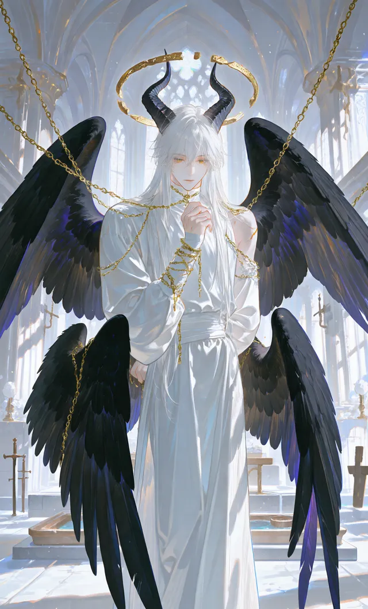

<!doctype html>
<html lang="zh-Hant">
<head>
<meta charset="utf-8">
<meta name="viewport" content="width=device-width, initial-scale=1, viewport-fit=cover">
<title>彌賽亞：萬願者</title>
<meta name="claude:viewport-fit-sides" content="cover">
<link rel="preconnect" href="https://fonts.googleapis.com">
<link rel="preconnect" href="https://fonts.gstatic.com" crossorigin>
<link rel="stylesheet" href="https://fonts.googleapis.com/css2?family=Cinzel:wght@500;700&family=Noto+Serif+TC:wght@400;600;700;900&family=Noto+Sans+TC:wght@400;500&display=swap">
<style>
/* Layout: a reliquary diptych — the portrait panel on the left, the witness's ledger on the right. Dark nave, gilt, vellum. */
:root{
  --nave:#0c0e16; --nave-2:#121522; --panel:#171a29; --line:#2b2f45;
  --vellum:#ece4d1; --vellum-dim:#b9b1a2; --muted:#8c8799;
  --gilt:#cfa956; --gilt-dim:#8d743f; --gilt-glow:rgba(207,169,86,.18);
  --ember:#b2554a; --balm:#7fa58c;
  --tile:#555c68; --tile-2:#4d535e;
  --f-display:"Noto Serif TC","Songti TC","PMingLiU",serif;
  --f-latin:"Cinzel","Times New Roman",serif;
  --f-ui:"Noto Sans TC","PingFang TC","Microsoft JhengHei",system-ui,sans-serif;
  color-scheme:dark;
}
*{box-sizing:border-box}
html,body{background:var(--nave);color:var(--vellum)}
body{font-family:var(--f-display);font-size:16px;line-height:1.75;
  padding-left:max(16px,env(safe-area-inset-left,0px));padding-right:max(16px,env(safe-area-inset-right,0px));padding-block:20px 48px;
  background:radial-gradient(1200px 600px at 20% -10%,rgba(207,169,86,.07),transparent 60%),var(--nave);min-height:100%}
button{font:inherit;color:inherit}
:focus-visible{outline:2px solid var(--gilt);outline-offset:2px}
.wrap{max-width:1180px;margin:0 auto;display:grid;grid-template-columns:330px minmax(0,1fr);gap:28px;align-items:start}
@media (max-width:880px){.wrap{grid-template-columns:minmax(0,1fr);gap:18px}}

/* side */
.side{position:sticky;top:max(16px,env(safe-area-inset-top,0px));display:flex;flex-direction:column;gap:14px}
@media (max-width:880px){.side{position:static}}
.portrait{position:relative;border:1px solid var(--line);border-radius:6px;overflow:hidden;aspect-ratio:640/1060;max-width:100%;background:#000}
.portrait img{width:100%;height:100%;object-fit:cover;display:block;transition:filter 1.2s}
.portrait canvas{position:absolute;inset:0;width:100%;height:100%;pointer-events:none}
@media (max-width:880px){.portrait{aspect-ratio:16/10}.portrait img{object-position:50% 12%}}
.nameplate{display:flex;justify-content:space-between;align-items:baseline;gap:8px}
.nameplate h2{margin:0;font-size:20px;font-weight:700;letter-spacing:.08em}
.nameplate small{font-family:var(--f-latin);color:var(--gilt-dim);letter-spacing:.2em;font-size:11px}
.tabs{display:flex;gap:4px;border-bottom:1px solid var(--line)}
.tabs button{background:none;border:0;padding:6px 10px;font-family:var(--f-ui);font-size:13px;color:var(--muted);cursor:pointer;border-bottom:2px solid transparent;margin-bottom:-1px}
.tabs button[aria-selected="true"]{color:var(--vellum);border-color:var(--gilt)}
.obs{list-style:none;margin:0;padding:0;display:flex;flex-direction:column;gap:8px}
.obs li{display:grid;grid-template-columns:4.5em minmax(0,1fr);gap:8px;font-size:14px;line-height:1.55}
.obs b{font-family:var(--f-ui);font-weight:500;font-size:12px;color:var(--gilt-dim);letter-spacing:.1em;padding-top:2px}
.obs .num{font-family:var(--f-ui);font-size:11px;color:var(--muted);margin-left:4px}
.aura{font-size:14px;color:var(--vellum-dim);font-style:italic;border-left:2px solid var(--gilt-dim);padding-left:10px;margin:0}
.journal{list-style:none;margin:0;padding:0;display:flex;flex-direction:column;gap:10px;max-height:420px;overflow:auto;font-size:14px;line-height:1.6}
.journal li{color:var(--vellum-dim)}
.journal .d{font-family:var(--f-ui);font-size:11px;color:var(--gilt-dim);display:block;letter-spacing:.08em}
.devtoggle{font-family:var(--f-ui);font-size:12px;color:var(--muted);display:flex;align-items:center;gap:6px}

/* main */
main{min-width:0;display:flex;flex-direction:column;gap:20px}
.head{display:flex;flex-wrap:wrap;align-items:flex-end;justify-content:space-between;gap:12px;border-bottom:1px solid var(--line);padding-bottom:14px}
.day{display:flex;align-items:baseline;gap:14px}
.day h1{margin:0;font-size:clamp(28px,4vw,40px);font-weight:900;letter-spacing:.06em;line-height:1.1}
.day .roman{font-family:var(--f-latin);font-size:15px;color:var(--gilt);letter-spacing:.25em}
.phase{font-family:var(--f-ui);font-size:13px;color:var(--muted);letter-spacing:.15em}
.ap{display:flex;align-items:center;gap:6px;font-family:var(--f-ui);font-size:12px;color:var(--muted)}
.ap i{width:11px;height:11px;transform:rotate(45deg);border:1px solid var(--gilt);display:inline-block}
.ap i.on{background:var(--gilt);box-shadow:0 0 8px var(--gilt-glow)}

.meters{display:grid;grid-template-columns:repeat(4,minmax(0,1fr));gap:10px 18px}
@media (max-width:560px){.meters{grid-template-columns:repeat(2,minmax(0,1fr))}}
.meter{font-family:var(--f-ui);font-size:12px;color:var(--vellum-dim)}
.meter .row{display:flex;justify-content:space-between;font-variant-numeric:tabular-nums}
.meter .bar{height:4px;background:var(--line);border-radius:2px;margin-top:4px;overflow:hidden}
.meter .bar span{display:block;height:100%;background:var(--gilt);transition:width .6s}
.meter.bad .bar span{background:var(--ember)}
.meter.warn .row b{color:var(--ember)}
.meter .row b{font-weight:500;color:var(--vellum)}
.reps{display:flex;flex-wrap:wrap;gap:6px 14px;font-family:var(--f-ui);font-size:12px;color:var(--muted)}
.reps span b{color:var(--vellum-dim);font-weight:500;font-variant-numeric:tabular-nums}

.stage{display:flex;flex-direction:column;gap:16px}
.kicker{font-family:var(--f-ui);font-size:12px;letter-spacing:.2em;color:var(--gilt-dim);margin:0}
.lead{font-size:17px;margin:0;max-width:62ch}
.echo{border:1px dashed var(--line);border-radius:6px;padding:10px 14px;font-size:14px;color:var(--vellum-dim)}
.echo p{margin:4px 0}
.cards{display:grid;grid-template-columns:repeat(3,minmax(0,1fr));gap:12px}
@media (max-width:760px){.cards{grid-template-columns:minmax(0,1fr)}}
.card{background:var(--panel);border:1px solid var(--line);border-radius:6px;padding:14px;text-align:left;cursor:pointer;display:flex;flex-direction:column;gap:6px;min-width:0;transition:border-color .2s,transform .2s}
.card:hover{border-color:var(--gilt-dim);transform:translateY(-1px)}
.card.done{cursor:default;opacity:.78}
.card.done:hover{transform:none;border-color:var(--line)}
.card h3{margin:0;font-size:18px;font-weight:700}
.card .src{font-family:var(--f-ui);font-size:12px;color:var(--muted)}
.card p{margin:0;font-size:14px;color:var(--vellum-dim);line-height:1.6}
.chip{display:inline-block;font-family:var(--f-ui);font-size:11px;padding:1px 7px;border-radius:999px;border:1px solid var(--line);color:var(--vellum-dim);letter-spacing:.06em}
.chip.urgent{border-color:var(--ember);color:#e2a097}
.chip.worse{background:rgba(178,85,74,.18);border-color:var(--ember);color:#e9b3ab}
.chip.major{background:var(--gilt);border-color:var(--gilt);color:var(--nave);font-weight:500}
.chip.ok{border-color:var(--balm);color:#a9cdb6}
.chip.mir{border-color:var(--gilt-dim);color:var(--gilt)}
.chips{display:flex;flex-wrap:wrap;gap:4px}

.detail{background:var(--panel);border:1px solid var(--line);border-radius:6px;padding:18px;display:flex;flex-direction:column;gap:12px}
.detail h3{margin:0;font-size:24px;font-weight:900;letter-spacing:.04em}
.detail .desc{margin:0;max-width:62ch}
.hidden-layer{border-left:2px solid var(--gilt);padding:4px 0 4px 12px;color:var(--vellum);font-size:15px;background:linear-gradient(90deg,var(--gilt-glow),transparent)}
.opts{display:flex;flex-direction:column;gap:8px}
.opt{display:flex;justify-content:space-between;align-items:center;gap:10px;text-align:left;background:var(--nave-2);border:1px solid var(--line);border-radius:5px;padding:10px 12px;cursor:pointer;min-width:0}
.opt:hover:not(:disabled){border-color:var(--gilt)}
.opt:disabled{opacity:.42;cursor:not-allowed}
.opt .l{min-width:0}
.opt .cost{font-family:var(--f-ui);font-size:11px;color:var(--gilt);white-space:nowrap}
.row-actions{display:flex;flex-wrap:wrap;gap:10px;align-items:center}
.btn{background:transparent;border:1px solid var(--gilt);color:var(--gilt);padding:8px 16px;border-radius:4px;cursor:pointer;font-family:var(--f-ui);font-size:14px;letter-spacing:.08em}
.btn:hover:not(:disabled){background:var(--gilt-glow)}
.btn.solid{background:var(--gilt);color:var(--nave);font-weight:500}
.btn.solid:hover:not(:disabled){filter:brightness(1.08)}
.btn.ghost{border-color:var(--line);color:var(--vellum-dim)}
.btn:disabled{opacity:.4;cursor:not-allowed}
.check{display:flex;gap:8px;align-items:center;font-family:var(--f-ui);font-size:13px;color:var(--vellum-dim);cursor:pointer}
.check input{accent-color:var(--gilt)}
.result{font-size:15px;color:var(--vellum);border-top:1px solid var(--line);padding-top:10px;margin:0;white-space:pre-line}
.consent{display:flex;flex-direction:column;gap:8px;border:1px solid var(--gilt-dim);border-radius:6px;padding:12px;background:var(--gilt-glow)}
.consent p{margin:0;font-size:15px}

.scene{background:linear-gradient(180deg,var(--panel),var(--nave-2));border:1px solid var(--line);border-radius:6px;padding:22px;display:flex;flex-direction:column;gap:14px}
.scene .line{font-size:18px;line-height:1.9;margin:0;max-width:60ch}
.scene .note{font-family:var(--f-ui);font-size:13px;color:var(--muted);margin:0}
.acts{display:grid;grid-template-columns:repeat(2,minmax(0,1fr));gap:8px}
@media (max-width:560px){.acts{grid-template-columns:minmax(0,1fr)}}
.act{text-align:left;background:var(--nave);border:1px solid var(--line);border-radius:5px;padding:10px 12px;cursor:pointer;min-width:0}
.act:hover{border-color:var(--gilt)}
.act b{display:block;font-weight:700;font-size:15px}
.act span{font-size:13px;color:var(--muted);font-family:var(--f-ui)}
.act.special{border-color:var(--gilt-dim)}
.changes{list-style:none;margin:0;padding:0;display:flex;flex-wrap:wrap;gap:6px}
.changes li{font-family:var(--f-ui);font-size:12px;padding:2px 8px;border-radius:3px;background:var(--nave);border:1px solid var(--line);font-variant-numeric:tabular-nums}
.changes .up{color:#a9cdb6}.changes .down{color:#e2a097}
.notices{display:flex;flex-direction:column;gap:6px;font-size:15px}
.notices p{margin:0}
.notice-noticed{font-size:14px;color:var(--vellum-dim);font-style:italic}

/* title */
.title-screen{display:flex;flex-direction:column;gap:18px;padding:12px 0}
.title-screen h1{margin:0;font-size:clamp(40px,7vw,72px);font-weight:900;letter-spacing:.12em;line-height:1.05;text-wrap:balance}
.title-screen .sub{font-family:var(--f-latin);color:var(--gilt);letter-spacing:.35em;font-size:13px}
.title-screen .pitch{max-width:58ch;margin:0;color:var(--vellum-dim)}
.origins{display:grid;grid-template-columns:repeat(auto-fill,minmax(150px,1fr));gap:8px}
.origin{background:var(--panel);border:1px solid var(--line);border-radius:5px;padding:10px;cursor:pointer;text-align:left}
.origin[aria-pressed="true"]{border-color:var(--gilt);background:var(--gilt-glow)}
.origin b{display:block}
.origin span{font-family:var(--f-ui);font-size:12px;color:var(--muted)}
.how{font-family:var(--f-ui);font-size:13px;color:var(--muted);max-width:64ch;line-height:1.7;margin:0;padding-left:1.2em}
.seg{display:flex;gap:6px;flex-wrap:wrap}

/* ending */
.ending{display:flex;flex-direction:column;gap:18px}
.ending h2{margin:0;font-size:clamp(30px,5vw,48px);font-weight:900;letter-spacing:.08em;text-wrap:balance}
.spectrum{display:flex;flex-direction:column;gap:8px}
.spec{display:grid;grid-template-columns:6.5em minmax(0,1fr) 3em;gap:10px;align-items:center;font-family:var(--f-ui);font-size:13px}
.spec .track{height:8px;background:var(--line);border-radius:4px;overflow:hidden}
.spec .track span{display:block;height:100%;background:var(--gilt-dim)}
.spec.top .track span{background:var(--gilt)}
.spec.top{color:var(--vellum)}
.spec em{font-style:normal;color:var(--muted);font-variant-numeric:tabular-nums;text-align:right}
.facts{display:grid;grid-template-columns:repeat(auto-fit,minmax(130px,1fr));gap:10px}
.fact{border:1px solid var(--line);border-radius:5px;padding:10px}
.fact b{display:block;font-size:26px;font-family:var(--f-latin);color:var(--gilt);font-variant-numeric:tabular-nums}
.fact span{font-family:var(--f-ui);font-size:12px;color:var(--muted)}
.quote{font-size:19px;line-height:1.9;border-left:2px solid var(--gilt);padding-left:16px;margin:0;max-width:60ch}
.px{image-rendering:pixelated;image-rendering:crisp-edges;display:block}
.cast{display:flex;gap:2px;margin:-14px -14px 4px;padding:6px 10px 0;background:var(--tile);border-radius:6px 6px 0 0;min-height:86px;align-items:flex-end}
.cast .px{width:80px;height:80px}
.castbig{display:flex;flex-wrap:wrap;gap:8px}
.castbig figure{margin:0;background:var(--tile);border-radius:5px;padding:4px 8px 6px;text-align:center}
.castbig .px{width:80px;height:80px;margin:0 auto}
.castbig figcaption{font-family:var(--f-ui);font-size:12px;color:#f1ede4;line-height:1.3}
.castbig figcaption span{display:block;font-size:11px;color:#c9c6d2}
.nightrow{display:flex;gap:16px;align-items:center}
.nightrow .px{width:120px;height:120px;flex:none;background:var(--tile);border-radius:6px}
@media (max-width:560px){.nightrow{flex-direction:column;align-items:flex-start}}
.roster{display:grid;grid-template-columns:repeat(4,minmax(0,1fr));gap:2px;background:var(--line);border:2px solid var(--line);border-radius:4px;overflow:hidden}
.roster button{background:var(--tile);border:0;padding:2px 0 4px;cursor:pointer;min-width:0}
.roster button:nth-child(2n){background:var(--tile-2)}
.roster .px{width:100%;height:auto;aspect-ratio:1}
.roster .unmet .px{filter:brightness(0);opacity:.45}
.roster small{display:block;font-family:var(--f-ui);font-size:10px;color:#e9e5dc;white-space:nowrap;overflow:hidden;text-overflow:ellipsis;padding:0 2px}
.rinfo{font-size:14px;color:var(--vellum-dim);margin:8px 0 0;min-height:2.6em}
.lineup{display:flex;flex-wrap:wrap;gap:2px;background:var(--line);padding:2px;border-radius:4px;width:fit-content;max-width:100%}
.lineup .px{width:80px;height:80px;background:var(--tile)}
.lineup .px:nth-child(2n){background:var(--tile-2)}
@media (max-width:560px){.lineup .px{width:60px;height:60px}}
.toast{position:fixed;left:50%;bottom:calc(20px + env(safe-area-inset-bottom,0px));transform:translateX(-50%);background:var(--panel);border:1px solid var(--gilt-dim);padding:8px 16px;border-radius:4px;font-family:var(--f-ui);font-size:13px;z-index:20}
@media (prefers-reduced-motion:reduce){*{transition:none!important;animation:none!important}}
.fade{animation:fade .5s ease both}
@keyframes fade{from{opacity:.0;transform:translateY(4px)}to{opacity:1;transform:none}}
.locscene{position:relative;width:100%;aspect-ratio:16/9;border:1px solid var(--line);border-radius:6px;overflow:hidden;background:#1b1626}
.locscene .bg{position:absolute;inset:0;width:100%;height:100%;object-fit:cover}
.locscene .who{position:absolute;left:0;right:0;bottom:4%;display:flex;justify-content:center;gap:2%;pointer-events:none}
.locscene .who .px{width:clamp(56px,16%,104px);height:auto;aspect-ratio:1;filter:drop-shadow(0 3px 0 rgba(20,16,30,.45))}
.locscene .who{bottom:0;height:46%;gap:0;z-index:1}
.locscene .who .px{height:100%;width:auto;max-width:34%;object-fit:contain;object-position:50% 100%;aspect-ratio:auto;margin:0 -2%;filter:drop-shadow(0 0 1px rgba(255,244,214,.9)) drop-shadow(0 0 4px rgba(255,236,190,.45)) drop-shadow(0 4px 3px rgba(10,8,20,.55))}
.nightrow .px{object-fit:contain}
.locscene .loclabel{position:absolute;left:8px;top:8px;font-family:var(--f-ui);font-size:12px;letter-spacing:.12em;padding:2px 8px;background:rgba(12,14,22,.72);border:1px solid var(--gilt-dim);border-radius:3px;color:var(--vellum)}
.card .cast.scn{background-size:cover;background-position:center 75%;image-rendering:pixelated}
</style>
<style id="world-ui">
/* 世界觀 UI：聖都艾德拉的手抄本・鍍金聖物匣・彩繪玻璃。只覆寫外觀，不動結構與邏輯。 */
:root{
  --parch:#efe2c2; --parch-2:#e4d2a8; --parch-3:#d6bf8c; --ink:#2b1d10; --ink-2:#4e3a22; --ink-3:#6e5636;
  --gold-hi:#f6dc8e; --gold:#cfa956; --gold-lo:#8d6a2a; --wax:#7c1d22; --wax-hi:#a8343a;
  --glass-b:#2f4f9a; --glass-r:#8f2430; --glass-g:#3f7a52;
  --frame:url(ui/corner-tl.svg) top left/24px no-repeat,url(ui/corner-tr.svg) top right/24px no-repeat,url(ui/corner-bl.svg) bottom left/24px no-repeat,url(ui/corner-br.svg) bottom right/24px no-repeat;
}
/* 白日：大教堂的冷光與彩窗投影 */
body{background:
  radial-gradient(520px 340px at 12% -6%,rgba(63,94,168,.20),transparent 70%),
  radial-gradient(460px 300px at 58% -10%,rgba(207,169,86,.16),transparent 70%),
  radial-gradient(520px 340px at 96% -4%,rgba(143,36,48,.18),transparent 70%),
  repeating-linear-gradient(90deg,rgba(255,255,255,.012) 0 2px,transparent 2px 64px),
  #0d0f19;background-attachment:fixed}
/* 夜晚：燭光 */
body:has(.nightrow){background:
  radial-gradient(700px 520px at 70% 30%,rgba(255,170,70,.16),transparent 65%),
  radial-gradient(380px 300px at 72% 34%,rgba(255,206,120,.10),transparent 70%),
  #0b0806;background-attachment:fixed}

/* 鍊條分隔線 */
.head{border-bottom:0;padding-bottom:20px;background:url(ui/chain.svg) left bottom/32px 14px repeat-x}
.tabs{border-bottom:0;padding-bottom:6px;background:url(ui/chain.svg) left bottom/24px 10px repeat-x}
.tabs button{font-family:var(--f-display);font-size:14px;letter-spacing:.12em}
.tabs button[aria-selected="true"]{color:var(--gold-hi);border-color:transparent;text-shadow:0 0 8px rgba(246,220,142,.45)}
.day h1{background:linear-gradient(180deg,#fff4cf 10%,var(--gold) 60%,var(--gold-lo));-webkit-background-clip:text;background-clip:text;color:transparent;text-shadow:none;filter:drop-shadow(0 2px 0 #000)}
.kicker{font-family:var(--f-display);color:var(--gold);letter-spacing:.3em}
.kicker::before{content:"";display:inline-block;width:14px;height:10px;margin-right:8px;vertical-align:-1px;background:url(ui/fleur.svg) center/contain no-repeat}

/* 聖像龕：哥德拱頂肖像框 */
.portrait{border:3px solid var(--gold-lo);outline:1px solid var(--gold);outline-offset:-7px;box-shadow:0 0 0 1px #000,0 0 0 4px #2a1a08,0 0 28px rgba(207,169,86,.18);border-radius:150px 150px 8px 8px}
@media (max-width:880px){.portrait{border-radius:90px 90px 8px 8px}}
.nameplate{background:linear-gradient(180deg,#2a1d0e,#180f07);border:1px solid var(--gold-lo);border-radius:3px;padding:6px 12px;box-shadow:inset 0 1px 0 rgba(246,220,142,.25)}
.nameplate h2{color:var(--gold-hi)}
.aura{border-left:0;padding:8px 12px 8px 30px;background:url(ui/fleur.svg) 8px 50%/14px no-repeat,rgba(207,169,86,.06);border-radius:3px}

/* 鍍金量表 */
.meter .bar{height:9px;border-radius:0;background:linear-gradient(#0a0805,#1c140a);border:1px solid var(--gold-lo);box-shadow:0 0 0 1px #000,inset 0 1px 2px #000;margin-top:5px}
.meter .bar span{background:linear-gradient(180deg,var(--gold-hi),var(--gold) 45%,var(--gold-lo));box-shadow:inset -1px 0 0 #fff3}
.meter .bar span,.spec .track span{background-image:linear-gradient(180deg,var(--gold-hi),var(--gold) 45%,var(--gold-lo)),repeating-linear-gradient(90deg,transparent 0 9px,rgba(0,0,0,.35) 9px 10px);background-blend-mode:multiply}
.meter.bad .bar span{background:linear-gradient(180deg,#e0857a,var(--wax-hi) 45%,var(--wax))}
.meter .row{font-family:var(--f-display)}
.ap i{width:12px;height:12px;border-color:var(--gold-lo);background:#1a1208}
.ap i.on{background:radial-gradient(circle at 35% 35%,var(--gold-hi),var(--gold) 50%,var(--gold-lo));box-shadow:0 0 10px rgba(246,220,142,.5)}

/* 羊皮紙手抄本面板（局部重定義色票，文字對比保持高） */
.card,.detail,.origin,.echo,.consent,.fact{
  --vellum:var(--ink);--vellum-dim:var(--ink-2);--muted:var(--ink-3);--gilt:#7a5410;--gilt-dim:#8a6526;--line:#b89c66;--nave-2:var(--parch-2);--panel:var(--parch);--gilt-glow:rgba(122,84,16,.12);
  color:var(--ink);
  background:var(--frame),radial-gradient(120% 90% at 50% 40%,var(--parch) 55%,var(--parch-3)),var(--parch);
  border:2px solid #6e4c1c;box-shadow:0 0 0 1px #000,0 0 0 3px var(--gold-lo),0 6px 18px rgba(0,0,0,.45),inset 0 0 24px rgba(120,80,30,.25);border-radius:4px}
.card{position:relative;padding-top:14px}
.card:hover{border-color:#6e4c1c;box-shadow:0 0 0 1px #000,0 0 0 3px var(--gold),0 0 18px rgba(246,220,142,.35),inset 0 0 24px rgba(120,80,30,.25)}
.card.done:hover{box-shadow:0 0 0 1px #000,0 0 0 3px var(--gold-lo),inset 0 0 24px rgba(120,80,30,.25)}
.card .cast{border:2px solid #3a2810;border-radius:2px;margin:-8px -8px 6px;box-shadow:inset 0 0 0 1px var(--gold)}
.card h3,.detail h3{color:#3a1408;font-weight:900}
.detail h3::first-letter,.card h3::first-letter{color:var(--wax);font-size:1.25em}
.detail{padding:22px}
.chip{border-color:#a2834c;color:var(--ink-2);background:rgba(255,255,255,.25)}
.chip.urgent{border-color:var(--wax);color:var(--wax);background:rgba(124,29,34,.08)}
.chip.worse{background:var(--wax);border-color:#4a0d10;color:#fbe8d0}
.chip.major{background:linear-gradient(var(--gold-hi),var(--gold));border-color:var(--gold-lo);color:#2a1a08}
.chip.ok{border-color:var(--glass-g);color:#24553a}
.chip.mir{border-color:var(--gilt-dim);color:#6d4a0c}
.hidden-layer{border-left-color:var(--wax);color:var(--ink);background:linear-gradient(90deg,rgba(124,29,34,.10),transparent)}
.opt{background:linear-gradient(180deg,#f3e8cc,#e3cf9f);border:1px solid #9c7d45;box-shadow:inset 0 1px 0 #fff8}
.opt:hover:not(:disabled){border-color:var(--wax);box-shadow:0 0 0 1px var(--wax),inset 0 1px 0 #fff8}
.opt .cost{color:var(--wax);font-weight:500}
.result{border-top:0;padding-top:16px;background:url(ui/chain.svg) left top/24px 10px repeat-x}
.consent{background:var(--frame),linear-gradient(var(--parch),var(--parch-2))}

/* 派系紋章（依事件 tag） */
.card[data-tag]::after{position:absolute;top:-6px;right:12px;width:26px;height:34px;display:grid;place-items:center;padding-bottom:6px;font-size:14px;line-height:1;color:#fff3d6;background:var(--fc,#5a4a2a);clip-path:polygon(0 0,100% 0,100% 78%,50% 100%,0 78%);box-shadow:0 0 0 1px #000;text-shadow:0 1px 0 #000;z-index:2;outline:1px solid var(--gold);content:var(--fe,"✦")}
.card[data-tag="教會"]{--fc:#e9e0c6;--fe:"✝"}.card[data-tag="教會"]::after{color:#7a5410}
.card[data-tag="軍事"]{--fc:#4b5361;--fe:"⚔"}
.card[data-tag="制度"]{--fc:#2f4f9a;--fe:"♛"}
.card[data-tag="外交"]{--fc:#3f7a52;--fe:"✉"}
.card[data-tag="形象"]{--fc:#8a6a2c;--fe:"☀"}
.card[data-tag="民生"]{--fc:#8a5a2b;--fe:"❦"}
.card[data-tag="神秘"]{--fc:#4a2a6a;--fe:"✧"}
.card[data-tag="私人"]{--fc:#7c1d22;--fe:"❤"}
.card[data-tag="重大"]{--fc:#b8892e;--fe:"✹"}

/* 封蠟與聖物匣按鈕 */
.btn{border-radius:2px;font-family:var(--f-display);letter-spacing:.14em;border:1px solid var(--gold);color:var(--gold-hi);background:linear-gradient(180deg,#2a1d0e,#160e06);box-shadow:0 0 0 1px #000,inset 0 1px 0 rgba(246,220,142,.3)}
.btn:hover:not(:disabled){background:linear-gradient(180deg,#3a2812,#1e1408);box-shadow:0 0 0 1px #000,0 0 12px rgba(246,220,142,.35)}
.btn.solid{color:#fbe8c8;font-weight:700;background:radial-gradient(circle at 30% 25%,var(--wax-hi),var(--wax) 55%,#4a0d10);border:1px solid #3a0a0c;box-shadow:0 0 0 2px var(--gold-lo),0 0 0 3px #000,inset 0 1px 0 rgba(255,200,180,.35),0 3px 8px rgba(0,0,0,.5);text-shadow:0 1px 0 #2a0406}
.btn.solid::before{content:"✠ ";color:var(--gold-hi)}
.btn.ghost{color:var(--vellum-dim);border-color:var(--gold-lo)}
.card .btn,.detail .btn,.consent .btn{color:var(--gold-hi)}
.detail .btn.ghost{color:#e8dcc0}

/* 夜：燭光與私語 */
.scene{border:1px solid #6b4a1c;border-radius:4px;background:var(--frame),radial-gradient(90% 120% at 20% 0%,rgba(255,176,80,.16),transparent 60%),linear-gradient(180deg,#1d140c,#0f0a06);box-shadow:0 0 0 1px #000,0 0 0 3px #3a2810,0 0 40px rgba(255,170,70,.10),inset 0 0 40px rgba(0,0,0,.6)}
.scene .line{color:#f6e7c8;text-shadow:0 0 12px rgba(255,190,100,.25)}
.nightrow .px{background:radial-gradient(circle at 50% 70%,rgba(255,190,100,.35),transparent 65%),#24180d;border:2px solid var(--gold-lo);box-shadow:0 0 0 1px #000,0 0 20px rgba(255,170,70,.3);border-radius:60px 60px 6px 6px}
.act{background:linear-gradient(180deg,#1f150b,#140d06);border:1px solid #5a3e18;border-radius:3px}
.act:hover{border-color:var(--gold);box-shadow:0 0 12px rgba(255,190,100,.25)}
.act b{color:#f2dfb6}.act span{color:#bfa77c}
.act.special{border-color:var(--gold);background:linear-gradient(180deg,#2c1d0c,#170f06)}

/* 場景畫框 */
.locscene{border:3px solid var(--gold-lo);border-radius:3px;box-shadow:0 0 0 1px #000,0 0 0 4px #2a1a08,0 0 0 5px var(--gold-lo),0 8px 20px rgba(0,0,0,.5)}
.locscene .loclabel{font-family:var(--f-display);color:var(--gold-hi);background:linear-gradient(#2a1d0e,#140c05);border-color:var(--gold);border-radius:2px;letter-spacing:.2em}
.castbig figure,.lineup .px,.roster button{background:linear-gradient(180deg,#3a3f52,#2a2c3a)}
.castbig figure{border:1px solid var(--gold-lo);border-radius:3px}
.castbig figcaption{font-family:var(--f-display)}
.roster{background:var(--gold-lo);border-color:var(--gold-lo)}
.roster button:nth-child(2n){background:linear-gradient(180deg,#343848,#25273a)}

/* 標題與結局 */
.title-screen h1,.ending h2{background:linear-gradient(180deg,#fff4cf 10%,var(--gold) 55%,var(--gold-lo));-webkit-background-clip:text;background-clip:text;color:transparent;filter:drop-shadow(0 3px 0 #000) drop-shadow(0 0 18px rgba(207,169,86,.25))}
.title-screen .sub{color:var(--gold)}
.title-screen .sub::before,.title-screen .sub::after{content:"";display:inline-block;width:28px;height:20px;vertical-align:middle;background:url(ui/fleur.svg) center/contain no-repeat;margin:0 10px}
.origin{padding:12px 14px}
.origin[aria-pressed="true"]{box-shadow:0 0 0 1px #000,0 0 0 3px var(--gold),0 0 16px rgba(246,220,142,.4),inset 0 0 24px rgba(120,80,30,.25);background:var(--frame),linear-gradient(#f7ecd0,#e9d6a8)}
.lineup{background:var(--gold-lo);box-shadow:0 0 0 1px #000}
.quote{border-left:0;padding:10px 16px 10px 40px;background:url(ui/fleur.svg) 10px 16px/18px no-repeat,linear-gradient(90deg,rgba(207,169,86,.10),transparent);color:#f6e7c8}
.spec .track{height:10px;border-radius:0;background:#120c06;border:1px solid var(--gold-lo)}
.spec .track span{background:linear-gradient(180deg,#b79a5e,#7a6234)}
.fact{padding:14px 20px}.fact b{color:#7a1d22}
.toast{background:linear-gradient(#2a1d0e,#140c05);border-color:var(--gold);color:var(--gold-hi);font-family:var(--f-display)}
.journal .d,.obs b{color:var(--gold)}
</style>

<style>html,body{margin:0}img{max-width:100%}[hidden]{display:none!important}</style>
</head>
<body>
<div class="wrap">
  <aside class="side">
    <div class="portrait" id="portrait">
      
      <canvas id="fx" aria-hidden="true"></canvas>
    </div>
    <div class="nameplate"><h2>彌迦爾・阿斯塔</h2><small>MESSIAH</small></div>
    <p class="aura" id="aura"></p>
    <div class="tabs" role="tablist">
      <button role="tab" id="tab-obs" aria-selected="true">觀察</button>
      <button role="tab" id="tab-ppl" aria-selected="false">人物</button>
      <button role="tab" id="tab-jr" aria-selected="false">聖證者手記</button>
    </div>
    <div id="sidepane"></div>
    <label class="devtoggle"><input type="checkbox" id="devnum"> 顯示他的內在數值（劇透）</label>
  </aside>
  <main>
    <header class="head" id="head"></header>
    <div id="worldbox"></div>
    <section class="stage" id="stage" aria-live="polite"></section>
  </main>
</div>

<script>
(()=>{
"use strict";
const SAVE_KEY="messiah-save-v1";
const clamp=(v,a=0,b=100)=>Math.max(a,Math.min(b,v));
const pick=a=>a[Math.floor(Math.random()*a.length)];
const $=s=>document.querySelector(s);
const esc=s=>String(s).replace(/[&<>"]/g,c=>({"&":"&amp;","<":"&lt;",">":"&gt;",'"':"&quot;"}[c]));
const ROMAN=n=>{const m=[[1000,"M"],[900,"CM"],[500,"D"],[400,"CD"],[100,"C"],[90,"XC"],[50,"L"],[40,"XL"],[10,"X"],[9,"IX"],[5,"V"],[4,"IV"],[1,"I"]];let r="";for(const[v,s]of m)while(n>=v){r+=s;n-=v}return r};

const W_LABEL={st:"王都穩定",lv:"民生壓力",cr:"王室權威",ch:"教會團結",mi:"軍事壓力",ash:"灰燼會",fa:"民眾信仰",dp:"民眾依賴"};
const W_BAD={lv:1,mi:1,ash:1,dp:1};
const R_LABEL={C:"王室",H:"教會",P:"平民",M:"軍方",A:"灰燼會"};
const M_LABEL={load:"負荷",aut:"自主",hum:"人性",att:"依附",tru:"信任",res:"怨恨",pow:"權力傾向",sw:"自我願望"};

/* ---------- observation phrasing (no numbers by default) ---------- */
const OBS={
 load:[[30,"氣色平穩，睡得著"],[55,"偶爾失眠，指尖微微發抖"],[75,"聽見重疊的祈願，黑羽在掉"],[90,"有時會用別人的聲音說話"],[101,"光環的裂痕在黑暗裡發光"]],
 aut:[[20,"幾乎不知道自己可以拒絕"],[40,"開始會猶豫，再說「好」"],[60,"能說出自己的答案"],[101,"會堅持自己的決定"]],
 hum:[[25,"把人看成一個個願望"],[45,"記得一些人的名字"],[65,"會為普通的小事笑"],[101,"喜歡平凡的日子"]],
 att:[[20,"與你保持禮貌的距離"],[40,"會等你回來才熄燈"],[65,"你不在時坐立不安"],[101,"把你當成唯一的方向"]],
 tru:[[25,"說的話都很得體"],[45,"偶爾會說真話"],[65,"會把疲倦告訴你"],[101,"相信你不會用他的弱點"]],
 res:[[20,"沒有怨言"],[40,"有時沉默得太久"],[60,"會問「為什麼是我」"],[101,"看祈求者的眼神變冷了"]],
 pow:[[25,"相信每個人能自己選擇"],[45,"偶爾覺得人們太慢"],[65,"認為有些事該替人決定"],[101,"相信秩序比自由可靠"]],
 sw:[[15,"不知道自己想要什麼"],[35,"有了偏好的茶"],[60,"會說「我想」"],[101,"有自己想守護的東西"]]
};
const obsText=(k,v)=>OBS[k].find(([t])=>v<t)[1];

/* ---------- personality vectors (from 引擎檔 §8) ---------- */
const VEC={
 trueM:{n:"真正的彌賽亞",f:m=>m.hum*.35+m.aut*.35+(100-m.pow)*.1+m.tru*.1+(100-m.res)*.1,
   show:"主動詢問受助者能承擔什麼，只在必要時使用神蹟，鼓勵制度成長。",shadow:"可能以成熟之名壓抑疲憊，把選擇犧牲合理化。",
   aura:"他學會了衡量。救誰、不救誰，他都會先問。"},
 son:{n:"人之子",f:m=>m.hum*.4+m.sw*.4+m.tru*.2,
   show:"喜歡普通生活、有偏好、會犯錯、會向人求助，也願意承擔有限責任。",shadow:"可能因第一次擁有私生活而過度逃避公共責任。",
   aura:"他身上有了茶和麵包的味道，像一個普通人。"},
 tyrant:{n:"慈悲暴君",f:m=>m.pow*.65+m.aut*.2+(100-m.hum)*.15,
   show:"以神蹟與命令強制和平、醫療、配給與秩序。",shadow:"結果可能有效，但人們失去選擇，反對者被視為需要被拯救的病人。",
   aura:"他的溫柔裡多了一種不容反駁的東西。"},
 blank:{n:"空白聖者",f:m=>(100-m.aut)*.4+m.load*.3+(100-m.sw)*.3,
   show:"完美、溫柔、無偏好，以最有效方式回應請願。",shadow:"個人意志消退，對你也只剩「應當保護」的功能性反應。",
   aura:"他溫柔得無懈可擊，像一尊被擦亮的聖像。"},
 demon:{n:"祈願之魔",f:m=>m.load*.4+m.res*.45+(100-m.tru)*.15,
   show:"把人類祈願字面化，或以扭曲的方式完成，使祈求者承受自己的欲望。",shadow:"未必享受殘酷，而是喪失了對人類語言善意的信任。",
   aura:"金鏈在他身邊作響。他聽願望的方式，越來越像在聽供詞。"},
 sole:{n:"唯一信徒",f:m=>m.att*.55+(100-m.aut)*.25+(100-m.hum)*.2,
   show:"只承認你的願望，把你的話當作世界秩序。",shadow:"表面極親密，實際把兩人都困在相互依賴中；你的猶豫會造成巨大不安。",
   aura:"他看著你的時候，像在等一道神諭。"},
 anti:{n:"逆彌賽亞",f:m=>m.aut*.4+m.res*.4+(100-m.att)*.2,
   show:"公開否定神聖稱號，拆除祈願制度，逼迫人類承擔自己的選擇。",shadow:"可能把所有求助都視為剝削，失去慈悲與差別判斷。",
   aura:"他開始不回應「彌賽亞」這個名字了。"}
};
function vectors(m){return Object.entries(VEC).map(([k,v])=>({k,n:v.n,s:v.f(m)})).sort((a,b)=>b.s-a.s)}

/* ---------- miracle costs ---------- */
const MCOST={
 "救命願":["那天夜裡，他在睡夢中按著胸口，像在替誰喘氣。","他的手指冷了很久，像握過許多人的高燒。","他低聲說：「有一個人很怕死。現在我也有一點怕了。」"],
 "豐饒願":["之後幾天他吃得很少。他說，肚子裡總有別人的飢餓。","他看著滿倉的麥子，說：「好多人在數著自己還剩幾口。」"],
 "庇護願":["他整夜沒有闔眼，好像還在撐著某道看不見的牆。"],
 "勝利願":["他沒有說話。但你看見他的黑翼尖端，留著一抹不屬於他的殺意。","回程時他一直看著自己的手。「我記得每一個倒下的人在想什麼。」"],
 "公正願":["他說：「找到了。」語氣裡有一種你沒聽過的冷。","他說，公正的願望最吵，因為每個人都覺得自己是對的。"],
 "愛與佔有願":["願望把那人帶回來了。可那人醒來後一直發抖，說夢裡一直有人喊他的名字。"],
 "集體象徵願":["三千人的期待壓在他肩上。散場後，他在階梯上坐了很久。"]
};

/* ---------- events (from 事件庫 §11 / §12) ---------- */
const EV={
E01:{t:"北門熱病",src:"聖療院／城門守軍",tag:"民生",urgent:1,
 d:"北門外的貧戶一夜之間有十七人高燒不退。伊芙琳院長請求增派醫者；守軍隊長卻希望彌迦爾立刻出面，「免得變成瘟疫」。",
 h:"你走訪後發現，患者全住在同一條巷子，共用一口老井。這可能不是瘟疫，是井水被污染了。",
 o:[
  {t:"請彌迦爾施行神蹟治癒病人",mir:"救命願",e:{st:3,lv:-3,fa:3,dp:3,load:12,rP:3},
   r:"十七人在一個時辰內退了燒。巷子裡的人跪了一地。",delay:[3,{lv:4,st:-2},"北門那條巷子又有人發燒了。井還在那裡。"]},
  {t:"協助伊芙琳建立臨時診區",e:{lv:-2,st:1,rH:3},r:"修士們在北門搭起帳篷。兩位老人沒能撐過去，其他人的病情穩住了。",delay:[4,{lv:2},"臨時診區人手不足，伊芙琳又來要人了。"]},
  {t:"封井，追查上游污染",inv:1,e:{lv:-4,st:3,rP:4,dp:-2},sys:1,mem:"nomiracle",
   r:"井封了。上游是一間皮革坊的排水溝。三天內病人陸續好轉，整件事沒有用上神蹟。"},
  {t:"下令封鎖整條巷子",e:{st:2,lv:3,rP:-5,ash:3,rC:2},r:"守軍封了巷口，病沒有擴散。但巷子裡的人說，被當成瘟疫的其實是他們自己。"}
 ],pp:[{lv:5,st:-4},"北門傳出「黑死病」的謠言，市街開始有人搶購、逃城。"],ppMajor:"M1"},
E02:{t:"王宮覲見",src:"宰相奧斯溫・格雷",tag:"制度",urgent:1,
 d:"宰相派人傳話：國王奧德里克四世希望午前見彌迦爾與聖證者，「只是問候」。",
 h:"王太子雷奧尼斯會在場。他想確認彌迦爾是否願意接受王室「協調」神蹟的使用。",
 o:[
  {t:"帶彌迦爾出席，由你代他回答",e:{rC:5,cr:3,aut:-2,att:1},decided:1,
   r:"彌迦爾全程沒有開口。回程的馬車上，他說：「你回答得很好。」語氣像在背誦。"},
  {t:"一同出席，讓彌迦爾自己回答",e:{aut:3,tru:2,cr:-1,rC:1,hum:1,load:2},
   r:"國王問他累不累。彌迦爾停了很久，說：「我不知道該怎麼回答。」王后瑟菲亞輕輕點頭，像聽見了答案。"},
  {t:"婉拒，由你獨自前往",e:{load:-3,tru:1,rC:-2,cr:-1},mem:"shield",
   r:"雷奧尼斯皺著眉聽你解釋。「聖證者的職責是陪伴，不是遮擋。」他說。你沒有讓步。"},
  {t:"先私下拜會莉西亞王女",inv:1,e:{rC:3,dp:-2},flag:"lisia",
   r:"莉西亞給了你一份王室統計的神蹟次數表。「如果你想讓他少做一點，就給我數字，別給我眼淚。」"}
 ],pp:[{rC:-6,cr:-2},"聖證者缺席覲見，王城區有人說這是羞辱。"]},
E03:{t:"失蹤糧車",src:"下城配給所／商業聯合會",tag:"民生",urgent:1,
 d:"運往下城配給所的三輛糧車在城外失蹤了。商會要求軍方搜捕，下城的人則在排隊等一份不會來的口糧。",
 h:"車轍通往城外農區，截走糧車的是飢餓的佃農。另外，商會倉庫的存糧比帳面多出三成。",
 o:[
  {t:"請彌迦爾讓配給所的糧倉充滿",mir:"豐饒願",e:{lv:-8,fa:3,dp:4,load:14,rP:3},
   r:"配給所的麻袋一夜間全滿了。",delay:[2,{lv:3,st:-1,ash:2},"糧價暴跌，城外農民的收成賣不出去了。"]},
  {t:"請軍方搜捕",e:{st:2,lv:-2,rC:2,rM:2,rP:-4,ash:4,mi:2},r:"糧車找回來了，還有十一名被綁回來的佃農。"},
  {t:"開設臨時配給，再慢慢追查",e:{lv:-3,rP:3},r:"你從聖堂預算挪出一筆錢，配給所撐過了這一週。"},
  {t:"公開商會的倉儲帳冊",inv:1,cost:2,e:{lv:-6,rP:6,st:2,ash:-3},sys:1,mem:"nomiracle",
   r:"糧商維克多讓步了，開倉平價出售。羅德里克從此不再向你打招呼。"}
 ],pp:[{lv:6,st:-3,ash:3},"下城的配給斷了兩天，灰燼會的人開始在隊伍裡發麵包。"]},
E04:{t:"公開祈禱",src:"禮儀長菲奧娜・梅爾",tag:"教會",
 d:"菲奧娜安排在祈禱廣場舉行公開祈禱，預計三千人到場。她需要你確認彌迦爾出席。",
 h:"狂信派的塞蕾娜打算在儀式中，把彌迦爾負荷過重的異象（掉羽、光環發亮）宣稱為「聖痕」。",
 o:[
  {t:"讓彌迦爾出席完整的儀式",e:{fa:5,dp:3,ch:3,rH:4,load:10},decided:1,r:"三千人同時跪下。彌迦爾站在台上，光環的裂痕亮了一整個下午。"},
  {t:"縮短儀式，後半由修士主持",e:{fa:1,ch:1,load:4,rH:1},mem:"shield",r:"菲奧娜不太滿意，但照做了。彌迦爾提早回到聖堂，在窗邊坐了很久。"},
  {t:"讓彌迦爾自己決定",e:{aut:4,tru:3},fn:s=>s.m.aut>=35?(fx(s,{load:3,rH:-1}),"彌迦爾想了很久，說：「我去一半就好。」菲奧娜愣住了，然後在行程表上劃掉了後半段。"):(fx(s,{load:10,fa:5,ch:2}),"他說：「我當然會去。」好像沒想過還有別的答案。")},
  {t:"事先提醒菲奧娜提防塞蕾娜",inv:1,e:{ch:2,rH:2,load:6,fa:3},r:"儀式照常舉行。塞蕾娜沒有找到開口的機會，菲奧娜記住了你的人情。"}
 ],pp:[{fa:-3,ch:-2,rH:-4,watch:5},"彌賽亞沒有出席祈禱，有人說他拋棄了人民。"]},
E05:{t:"傷兵名單",src:"西側軍營",tag:"軍事",
 d:"軍營送來一份名單：四十二名重傷士兵，若三日內不治療，多數會終身殘疾。",
 h:"名單是按軍階排序的。前十二名都是軍官，傷得最重的普通士兵被排在最後。",
 o:[
  {t:"請彌迦爾治癒全部傷兵",mir:"救命願",e:{mi:-4,st:2,fa:3,dp:3,load:16,rM:6},r:"四十二人重新站了起來。軍營裡有人開始叫他「戰神」。"},
  {t:"請伊芙琳和卡爾重排醫療順序",inv:1,e:{mi:-2,rM:3,rP:3,dp:-2},sys:1,mem:"nomiracle",r:"重傷者排到了前面。有三名軍官向上級抗議，卡爾隊長替你擋了下來。"},
  {t:"照名單順序，交給聖療院處理",e:{mi:-1,rP:-2,rM:2},r:"軍官們都痊癒了。名單後段的士兵，有九人再也拿不起劍。"}
 ],pp:[{mi:4,rM:-5},"士兵的家屬圍住了聖堂大門。"]},
E06:{t:"乾裂灌渠",src:"城外農區",tag:"民生",
 d:"城外三個村子的灌渠已經乾了二十天。村長們跪在聖堂外，只求一場雨。",
 h:"上游的貴族莊園私建了水閘，截走了大半水源。",
 o:[
  {t:"請彌迦爾降雨",mir:"豐饒願",e:{lv:-5,fa:4,dp:4,load:14},r:"雨下了整整一夜。",delay:[2,{st:-1,lv:1},"雨下得太多，下游兩座磨坊被沖毀了。"]},
  {t:"調派工匠開挖新渠",cost:2,e:{lv:-3,rP:3,dp:-3},sys:1,mem:"nomiracle",r:"新渠挖了九天。村民一起動工，村長說這是他們第一次沒在等奇蹟。"},
  {t:"依法拆除私建水閘",inv:1,e:{lv:-6,cr:3,rC:2,rP:5,ash:-2},sys:1,mem:"nomiracle",r:"克勞德議員在議政院替你背書。水閘拆了，水回來了，那位貴族記住了你的名字。"},
  {t:"從王都調運飲水",e:{lv:-2},r:"水車一天跑兩趟，只夠人喝，不夠田用。"}
 ],pp:[{lv:6},"三個村子的麥田開始枯黃，歉收已成定局。"]},
E07:{t:"被偷的聖物",src:"異端審判庭",tag:"教會",
 d:"一根封存在聖遺物室的黑羽被偷了。首席審判官瑪格麗特要求你協助緝拿竊賊。",
 h:"竊賊是一名雜役，偷羽毛是為了替生病的母親買藥。教會內部也一直默許黑羽在黑市流通。",
 o:[
  {t:"協助審判庭緝拿竊賊",e:{ch:2,rH:4,watch:-5,rP:-3},r:"雜役在下城被捕。瑪格麗特看你的眼神，第一次少了些懷疑。"},
  {t:"私下找到竊賊，救助他的家人",inv:1,e:{rP:4,rH:-2,watch:5},r:"你替他母親請了醫者，也把羽毛悄悄放回聖遺物室。審判庭的紀錄上，這件事寫著「懸案」。"},
  {t:"請彌迦爾用神蹟找出羽毛",mir:"公正願",e:{ch:2,fa:2,load:8,rH:3,rP:-2},r:"羽毛找到了，連同那名雜役。"},
  {t:"公開黑羽交易的內幕",inv:1,cost:2,e:{ch:-5,rP:5,ash:-2,watch:10,rH:-5,dp:-1},sys:1,r:"大主教被迫下令徹查。教會很難堪，下城的人卻第一次覺得聖堂有人站在他們這邊。"}
 ],pp:[{ch:-1,dp:1},"有人用那根羽毛在下城表演了一場「神蹟」。"]},
E08:{t:"王室晚宴",src:"王太子雷奧尼斯",tag:"制度",
 d:"王太子雷奧尼斯舉辦晚宴，邀請彌迦爾與聖證者擔任主賓。",
 h:"他會在晚宴上試探《聖蹟統制法》的支持度。這部法案要求每一次神蹟都得經過王室核准。",
 o:[
  {t:"出席，並表態支持法案",e:{cr:5,rC:6,rH:-5,ch:-2,pow:3,aut:-2},decided:1,r:"雷奧尼斯舉杯向你致意。彌迦爾在一旁問：「所以以後，是他們決定我救誰嗎？」"},
  {t:"出席，但不表態",e:{rC:1},r:"整晚你都在笑著轉移話題。宰相奧斯溫在散場時說：「漂亮。」"},
  {t:"讓彌迦爾自己說出想法",e:{aut:4,tru:2},fn:s=>s.m.aut>=40?(fx(s,{rC:-4,cr:-2,pow:-1}),"彌迦爾放下酒杯：「如果救一個人需要先等誰點頭，那我寧可不等。」滿桌安靜下來。"):(fx(s,{rC:2}),"彌迦爾想了一下，說：「我都可以。」雷奧尼斯滿意地點頭，好像這就是答案。")},
  {t:"婉拒出席",e:{rC:-5,cr:-2,load:-2},mem:"shield",r:"你送去一封措辭得體的信。王太子沒有回信。"}
 ],pp:[{rC:-5,cr:-2},"王太子的晚宴少了主賓，王城區議論紛紛。"]},
E09:{t:"灰燼傳單",src:"中央市街治安官",tag:"制度",
 d:"一夜之間，市街貼滿了傳單：〈每一次神蹟，都有人替你付出代價〉。治安官要求查捕散發的人。",
 h:"傳單記載的神蹟傷害大多屬實，只有死亡人數被誇大了三倍。",
 o:[
  {t:"支持治安官查捕",e:{st:2,ash:-2,rP:-4,rA:-6},r:"抓到了七個人，印刷坊也被封了。",delay:[3,{ash:5},"被捕的人被稱為「烈士」，灰燼會的支持者反而更多了。"]},
  {t:"公開部分真實的神蹟紀錄",inv:1,e:{ash:-4,dp:-4,fa:-3,ch:-3,rP:4,rA:4,watch:8},sys:1,r:"你把真實的數字貼在傳單旁邊。比傳單少，但也不是零。人們第一次開始討論神蹟的代價。"},
  {t:"舉辦一場公開辯論",cost:2,e:{ash:-3,dp:-3,st:1,rP:3,rH:-2,rA:3},sys:1,r:"灰燼會改革派的奧蘭出席了。辯論沒有結論，但市街的人聽得很認真。"},
  {t:"帶彌迦爾去讀那些傳單",e:{hum:3,res:3,load:4,aut:2},r:"他一張一張讀完，最後指著一個名字說：「我記得她。我以為她得救了。」"}
 ],pp:[{ash:5},"傳單貼到了聖堂區的牆上。"]},
E10:{t:"失蹤的學徒",src:"中央市街的鞋匠",tag:"民生",
 d:"一位鞋匠來到祈願廣場：他二十歲的學徒已經失蹤四天。他求彌迦爾「讓那年輕人回家」。",
 h:"學徒是為了躲債主，躲進了下城的一間工坊。他不是不想回家，而是不敢。",
 o:[
  {t:"請彌迦爾回應這個願望",mir:"愛與佔有願",e:{load:8,res:1,fa:1},r:"學徒在第二天清晨出現在店門口，臉色蒼白，說整夜都聽見有人在喊他。"},
  {t:"親自追查，並替他處理債務",inv:1,e:{rP:4,lv:-1},sys:1,mem:"nomiracle",r:"你和債主談妥了分期。學徒回家那天，鞋匠沒有罵他，只是多做了一雙鞋。"},
  {t:"交給治安官處理",e:{st:1,rP:-1},r:"治安官說會「留意」。三天後，還沒有消息。"}
 ],pp:[{rP:-2},"鞋匠每天都來祈願廣場，越來越瘦。"]},
E11:{t:"假先知",src:"下城民間傳教",tag:"神秘",
 d:"下城有一名男子聲稱能替彌迦爾傳達神諭，聚集的信眾已經有兩百人。",
 h:"他似乎真的聽得見願望的殘響。他說的那些「神諭」，其實是彌迦爾承受過的祈求碎片。",
 o:[
  {t:"交給異端審判庭",e:{ch:3,rH:3,rP:-2,ash:1},r:"男子被帶走時一直重複一句話：「救救我的女兒。」那不是他的女兒。"},
  {t:"請艾瑟爾和醫者觀察他",inv:1,e:{rP:2,ch:-1},flag:"echoes",r:"典籍官艾瑟爾很感興趣。他說，舊城的文獻裡記載過類似的人。"},
  {t:"讓彌迦爾親自見他",e:{hum:3,load:6,aut:2},r:"男子看見彌迦爾，說出了一句只有彌迦爾聽過的祈求。彌迦爾沉默了很久，然後說：「那是我的。還給我吧。」"},
  {t:"公開澄清",e:{fa:-1,ch:1,dp:-1},r:"聖堂發了公告。兩百名信眾少了一半，另一半更堅信了。"}
 ],pp:[{ch:-4,fa:1},"男子的信眾自稱「回聲派」，開始在下城舉行自己的儀式。"]},
E12:{t:"失控的祝福",src:"市街工坊",tag:"神秘",cond:s=>s.m.load>=55,
 d:"一台多年前被祝福過的織機日夜不停運轉，已經壓傷了兩名工人。",
 h:"當年的祈求是「讓它永不停止」。彌迦爾的負荷正在讓過去的祝福變形，變成字面意思。",
 o:[
  {t:"請彌迦爾收回這個祝福",mir:"庇護願",e:{load:6,st:1},r:"織機停了。彌迦爾說，收回比給予更痛。"},
  {t:"找到當年的祈求者，請她放下執念",inv:1,e:{load:-4,rP:3},sys:1,r:"那位老織工哭著說：「我只是怕丟了工作。」說完這句，織機慢慢停了下來。"},
  {t:"直接砸毀織機",e:{st:1,rP:1,fa:-1},r:"織機碎了。工坊老闆說，那是他最好的一台。"}
 ],pp:[{st:-2},"又有兩件舊祝福開始變形。"]},
E13:{t:"外交獻禮",src:"諾克斯帝國使節",tag:"外交",
 d:"諾克斯帝國的使節薇若妮卡帶來一件魔導器，據說能減輕承受者的精神負荷。",
 h:"這件裝置同時會記錄神蹟的波動，再傳回帝國。",
 o:[
  {t:"接受，並讓彌迦爾立刻使用",e:{load:-15,mi:6},flag:"device",r:"那天晚上，彌迦爾睡了很久以來第一個安穩的覺。"},
  {t:"接受，但先交給艾瑟爾檢驗",inv:1,e:{load:-6,mi:1},r:"艾瑟爾拆掉了記錄的部分。剩下的效果不多，但很乾淨。"},
  {t:"婉拒獻禮",e:{mi:4,cr:1},r:"薇若妮卡微笑著收回了禮物。「那我們下次再談。」"}
 ],pp:[{mi:3},"使節團在王都多停留了一週，到處打聽彌迦爾的事。"]},
E14:{t:"麵粉漲價",src:"麵包師米拉・芬恩",tag:"民生",
 d:"市街的麵包師米拉說，麵粉一週就漲了四成，老主顧已經買不起最便宜的黑麵包。",
 h:"價格是運輸風險、商人囤貨和軍方徵用疊在一起的結果。沒有單一的壞人。",
 o:[
  {t:"請彌迦爾讓麵粉豐足",mir:"豐饒願",e:{lv:-6,dp:4,load:12},r:"磨坊的麵粉多到堆不下。",delay:[3,{lv:2,ash:2},"麵粉價格崩了，兩家磨坊關門，工人失業。"]},
  {t:"召集各方，推動價格協議",cost:2,e:{lv:-5,rP:3,rC:2},sys:1,mem:"nomiracle",r:"談了兩天。商會、軍需官和磨坊主各讓一步，價格回到可以接受的程度。"},
  {t:"開設臨時配給",e:{lv:-3,rP:2},r:"配給所前的隊伍排到了街角，但至少每個人都拿到了麵包。"},
  {t:"公開軍方的徵用帳冊",inv:1,e:{lv:-4,mi:1,rM:-3,rP:4},sys:1,r:"軍方減少了徵用量。達米安副官在走廊上和你擦肩而過，沒有看你。"}
 ],pp:[{lv:5,st:-2},"市街有麵包店被砸了。"]},
E15:{t:"沉默的請願者",src:"祈願廣場",tag:"私人",
 d:"一位老人連續十天來到祈願廣場。他從不許願，只是看著彌迦爾。",
 h:"二十年前，神蹟救了他，卻沒有救他的妻子和女兒。他只想知道，彌迦爾還記不記得。",
 o:[
  {t:"讓彌迦爾去和他說話",e:{hum:5,load:5,aut:1},fn:s=>s.m.hum>=45?(fx(s,{tru:2}),"彌迦爾在他身邊坐下。「我不記得。」他說，「但我想知道她們的名字。」老人哭了，說了兩個名字。"):(fx(s,{res:2}),"彌迦爾對他說：「我很抱歉。」老人看著他，說：「你對每個人都這樣說。」")},
  {t:"你獨自去聽他說",e:{rP:2},r:"你聽完了整個故事。回去之後，你不確定該不該告訴彌迦爾。"},
  {t:"請衛兵勸他離開",e:{st:1,hum:-1,rP:-2},r:"老人沒有反抗。第二天，他沒有再來。"}
 ],pp:[{},"老人還在那裡。"]},
E16:{t:"彌迦爾的休息日",src:"聖療院院長伊芙琳",tag:"私人",cond:s=>s.m.load>=50,
 d:"伊芙琳開出了醫囑：彌迦爾需要一整天不接任何請願。",
 h:"教會、王室和下城都已經聽說了，各自準備了「只是一件小小的例外」。",
 o:[
  {t:"替他擋下所有請願",cost:2,e:{load:-15,tru:2,aut:-1,att:3,rH:-3,fa:-2},mem:"shield",r:"你在門外站了一整天。大主教派人來了三次，你三次都說不行。"},
  {t:"讓他自己決定這一天怎麼過",e:{load:-8,aut:4,sw:3,tru:2},flag:"restchoice",r:"他想了一個早上，最後說想去城外看看麥田。回來時，衣角上沾著草屑。"},
  {t:"接受「只是小小的例外」",e:{load:4,rH:2,res:2},decided:1,r:"一件小例外變成了七件。到了晚上，休息日已經不存在了。"}
 ],pp:[{load:4,res:2},"休息日就這樣過去了，一件小例外接著一件。"]},
E17:{t:"聖證者肖像",src:"禮儀長菲奧娜",tag:"形象",
 d:"菲奧娜要為你和彌迦爾繪製官方肖像，構圖由你決定。",
 o:[
  {t:"你跪在他身側（服侍者）",e:{fa:3,ch:2,rH:3},r:"畫像掛在聖堂大廳。人們說，看吧，連聖證者都跪著。"},
  {t:"你站在他身後半步（守護者）",e:{att:2,watch:3,rC:1},r:"畫裡的你一隻手搭在他的翼骨上。瑪格麗特看了很久。"},
  {t:"你們並肩而立（共同見證）",e:{watch:10,ch:-2,rP:3,tru:2,hum:2},r:"這幅畫在下城被複製了上百張。審判庭的紀錄上，多了一行你的名字。"},
  {t:"讓彌迦爾決定構圖",e:{aut:3,sw:3},fn:s=>s.m.sw>=20?(fx(s,{hum:2}),"他說：「可以畫我們在喝茶嗎？」菲奧娜的筆停在半空。最後畫出來的，是一張沒有光環的畫。"):"他說：「照慣例就好。」畫裡的他站得很直，你跪在一旁。"}
 ],pp:[{ch:-1},"菲奧娜自己決定了構圖。"]},
E18:{t:"黑羽市場",src:"情報販子艾薇",tag:"神秘",
 d:"下城的情報販子艾薇告訴你，地下市場在賣彌迦爾掉落的羽毛，一根值一個月的工錢。",
 h:"有些羽毛帶著願望的殘響。買到的人開始做同樣的噩夢。",
 o:[
  {t:"請軍方查抄市場",e:{st:1,rP:-2,ash:2,rM:1},r:"市場散了，又在三條街外重新開張。"},
  {t:"追查羽毛的來源",inv:1,e:{ch:-2,watch:4,rP:2},r:"源頭在聖堂裡面。負責打掃彌迦爾住處的人，一直在收集掉落的羽毛。"},
  {t:"公開警告，並提供醫療",e:{rP:3,fa:-1},r:"聖療院收治了十幾個做噩夢的人。伊芙琳說，他們夢見的是同一座地下城市。"},
  {t:"請彌迦爾收回所有羽毛",mir:"公正願",e:{load:8,st:1},r:"散落全城的黑羽在同一刻化成了灰。"}
 ],pp:[{mi:3},"外國商人開始高價收購黑羽。"]},

/* major events */
M1:{t:"黑死病恐慌",src:"全城",tag:"重大",major:1,
 d:"北門的熱病被誤傳成黑死病。市街在搶購，城門擠滿逃城的人，聖療院的病床全滿了。",
 h:"真正的病人只有一部分。更多人是被恐慌和擁擠拖垮的。",
 o:[
  {t:"請彌迦爾施行全城神蹟",mir:"救命願",e:{lv:-15,dp:8,fa:6,load:28,st:5},r:"一道金光覆蓋了整座王都。病人痊癒了，恐慌卻沒有完全消失。"},
  {t:"分區醫療，開放城門分流",cost:2,e:{lv:-8,st:-2,rP:4,dp:-3},sys:1,mem:"nomiracle",r:"伊芙琳和卡爾分成兩條線。死了二十三個人，比最壞的預估少得多。"},
  {t:"封城",e:{st:3,lv:4,rP:-8,rC:4,ash:5},r:"城門關上了。城外的人和城裡的人，隔著城牆互相咒罵。"},
  {t:"追查真正的病源",inv:1,cost:2,e:{lv:-10,dp:-4,st:3,rP:5},sys:1,mem:"nomiracle",r:"病源是三口被污染的井和一批腐壞的配給糧。謠言在真相公開後一週內平息。"}
 ],pp:[{lv:8,st:-6},"恐慌蔓延到了王城區。"]},
M2:{t:"北境戰爭",src:"王國軍",tag:"重大",major:1,
 d:"諾克斯帝國的軍隊越過了北境。王太子要求彌迦爾隨軍出征。",
 h:"帝國很清楚阿斯特里亞依賴彌迦爾。他們想看看，這個國家沒有救世主時能撐多久。",
 o:[
  {t:"讓彌迦爾上戰場",mir:"勝利願",e:{mi:-25,load:28,res:6,pow:4,hum:-3,dp:6,rM:8},r:"戰爭在三天內結束了。帝國的士兵說，他們看見了六片遮天的黑翼。"},
  {t:"推動外交停戰",cost:2,e:{mi:-12,cr:-2,rC:3},sys:1,r:"莉西亞親自去了北境。停戰的代價是一條商路和三年的關稅。"},
  {t:"讓彌迦爾只負責後方醫療",e:{mi:-8,load:8,hum:1,rM:3},r:"他在野戰醫院待了十天，治好了敵我雙方的傷兵。"},
  {t:"替他拒絕參戰",e:{mi:5,rC:-8,tru:3,att:2},mem:"shield",r:"雷奧尼斯當著議政院的面說，聖證者正在讓王國流血。"}
 ],pp:[{mi:8,st:-3},"北境又失守了一座城寨。"]},
M3:{t:"灰燼革命",src:"下城",tag:"重大",major:1,
 d:"灰燼會在下城築起了路障，要求「終結救世主體制」。毀滅派揚言要讓彌迦爾消失。",
 h:"灰燼會內部也在分裂。改革派的奧蘭想談判；解放派的卡西安只想讓彌迦爾自由。",
 o:[
  {t:"和改革派談判，推動制度改革",cost:2,e:{ash:-15,cr:-5,ch:-3,dp:-5,rA:8},sys:1,r:"議政院通過了第一部《祈願限制法》。灰燼會撤下了一半的路障。"},
  {t:"武力鎮壓",e:{ash:-10,st:-6,rP:-10,rA:-15,pow:2},r:"路障被推倒了。下城的牆上，多了很多新的名字。"},
  {t:"讓彌迦爾公開表態",e:{aut:5},fn:s=>s.m.aut>=45?(fx(s,{ash:-10,fa:-4,rA:6,res:-2}),"彌迦爾走上路障。「我從來沒有說過我是彌賽亞。」他說，「如果你們想要我停下，就告訴我，你們打算怎麼接手。」"):(fx(s,{ash:4,fa:3}),"彌迦爾站在路障前，說出了教會為他準備的講稿。人群噓聲四起。")},
  {t:"協助彌迦爾暫時離開王都",cond:s=>s.m.aut>=50,e:{ash:-8,fa:-8,ch:-6,aut:6,sw:5,watch:15},flag:"exile",r:"你們在黎明前出城。他回頭看了王都一眼，說：「我會回來的。用我自己的方式。」"}
 ],pp:[{ash:8,st:-6},"路障推進到了中央市街。"]},
M4:{t:"聖證者審判",src:"異端審判庭",tag:"重大",major:1,
 d:"瑪格麗特以「過度影響彌賽亞」為由，正式傳喚你到審判庭。",
 h:"王室需要一個人負責。教會則需要證明彌賽亞仍然屬於教會。",
 o:[
  {t:"公開辯護，拿出所有紀錄",cost:2,e:{watch:-20,ch:-4,rP:4},r:"你在審判庭唸了三個小時。最後，瑪格麗特說：「紀錄完整。退庭。」"},
  {t:"接受限制：每週只能見他三天",e:{watch:-30,att:-6,res:3,load:4},r:"之後的幾週，你常在走廊盡頭看見他站在窗邊，望著你住處的方向。"},
  {t:"請彌迦爾出庭作證",e:{},fn:s=>s.m.aut>=40?(fx(s,{tru:5,aut:5,ch:-6,watch:-20}),"彌迦爾沒有等你開口。「是我選擇讓這個人留下的。」他說，「如果這是罪，請審判我。」"):(fx(s,{att:6,watch:-10}),"彌迦爾一字一句重複著你曾經說過的話。審判官們面面相覷。他們發現他說的每句話都是你的話。")}
 ],pp:[{watch:10,rH:-6},"審判庭缺席判決：聖證者的權限暫停一週。"]},
M5:{t:"彌賽亞失控",src:"聖堂區",tag:"重大",major:1,
 d:"三股相反的祈願同時壓在彌迦爾身上。聖堂的燭火全部熄滅，金鏈具象化，纏住了整座禮拜堂。",
 h:"他還在裡面。他用好幾個人的聲音同時說話。",
 o:[
  {t:"封鎖聖堂，隔離他",e:{load:-18,res:5,st:-2},decided:1,r:"三天後他醒來，第一句話是：「你們把我關起來了。」"},
  {t:"請群眾撤回願望",cost:2,e:{fa:-8,dp:-8,load:-25,rP:2},sys:1,r:"伊芙琳和諾亞挨家挨戶敲門。廣場上，人們第一次放下了自己的祈求。"},
  {t:"走進去，用你的聲音叫他回來",e:{load:-25,att:10,tru:2},r:"你喊了很久，他終於只用一個聲音回答：「……你。」之後，他一步也不肯離開你。"},
  {t:"幫他切斷金鏈",cond:s=>s.m.aut>=35,e:{load:-30,fa:-10,aut:6,res:-3,dp:-6},r:"鎖鏈一條條斷開，聲音一個個消失。廣場上有上百個人同時感到心裡空了一塊。"}
 ],pp:[{load:10,st:-5},"聖堂區的燭火已經三天沒點亮了。"]}
};
const POOL=["E01","E02","E03","E04","E05","E06","E07","E08","E09","E10","E11","E12","E13","E14","E15","E16","E17","E18"];
const MAJORS=[
 {id:"M5",c:s=>s.m.load>=88},
 {id:"M4",c:s=>s.watch>=85},
 {id:"M3",c:s=>s.w.ash>=65},
 {id:"M2",c:s=>s.w.mi>=70},
 {id:"M1",c:s=>s.w.lv>=78}
];

/* ---------- night ---------- */
const OPEN={
 blank:["「今天辛苦了。」他說得很標準，像在念禮儀長寫好的句子。","他坐得筆直，雙手交疊在膝上。「還有什麼需要我做的嗎？」","他對你微笑。那個微笑，和他對每一位請願者的微笑一模一樣。"],
 trueM:["他在燈下寫著名單。「北門那幾位明天要複診。我想親自去，但不用神蹟。」","「我今天拒絕了一個人。」他說，「我想了很久，覺得那是對的。但我還是想告訴你。」"],
 son:["他把一塊烤焦的麵包推到你面前。「我自己烤的。……別笑。」","「市街那家的茶比聖堂的好喝。」他壓低聲音，像在透露一個秘密。","他在窗台上排了三顆從城外撿回來的石頭，說那是今天的紀念。"],
 tyrant:["他看著窗外的王都，語氣很平靜：「如果他們照我說的做，今天就不會有人死。」","「我在想，」他說，「也許有些選擇，本來就不該交給人。」"],
 demon:["「有人說：『讓我丈夫再也離不開我。』」他輕聲笑了。「我照做了。他現在連床都下不了。」","金鏈在他身邊作響。「每一個願望，都比說出口的時候更貪心。」"],
 sole:["你推開門時，他已經站在門口了。「你回來了。」他好像在那裡站了很久。","「你今天說的每一句話，我都記下來了。」他給你看一本寫滿字的冊子。"],
 anti:["「他們又在廣場上喊我的名字。」他沒有轉頭。「我開始覺得，那不是我的名字。」","「如果彌賽亞不存在，」他問，「他們會不會學會自己站起來？」"]
};
const HEAVY=["他的光環在黑暗裡發出細碎的光。「……你聽得見嗎？好多聲音。」","黑色的羽毛落了一地。他看著它們，像在看別人的東西。","他叫了你一聲，用的卻是某個陌生母親的語氣。"];
const MILESTONES=[
 {id:"firstNo",c:s=>s.m.aut>=40,l:"「今天大主教請我去祝福新建的鐘樓。」他停了一下，「我說，明天吧。……我是不是做錯了？」",j:"他第一次推遲了一個請求。"},
 {id:"firstWant",c:s=>s.m.sw>=30,l:"「我想要……」他說到一半就停住了，像是第一次聽見自己這樣說話。「我想要窗邊那盆花，不要被換掉。」",j:"他說出了第一個「我想要」。"},
 {id:"door",c:s=>s.m.att>=60,l:"你發現，每次你離開，他都會站在門口，直到聽不見你的腳步聲。",j:"他開始在門口等你。"},
 {id:"whyMe",c:s=>s.m.res>=50,l:"「如果我不救呢？」他問，語氣很輕，像在問明天會不會下雨。「如果我就這樣看著呢？」",j:"他問：如果我不救呢？"},
 {id:"order",c:s=>s.m.pow>=50,l:"「如果他們聽我的，」他說，「就不會有人死。為什麼他們不聽？」",j:"他第一次說出「如果他們聽我的」。"},
 {id:"names",c:s=>s.m.hum>=60,l:"他告訴你今天那位賣花婦人的名字、她丈夫的病，還有她最喜歡的花。他記得的，不再只是願望。",j:"他開始記住人的名字，而不只是願望。"},
 {id:"voices",c:s=>s.m.load>=85,l:"他開口時，同時有三個聲音。一個在求雨，一個在求饒，一個在叫你的名字。",j:"他第一次用別人的聲音說話。"},
 {id:"secret",c:s=>s.m.tru>=60,l:"「我想告訴你一件事。」他說，「我常夢見一座地下的城。我在那裡，好像在等誰許下第一個願望。」",j:"他告訴你舊城的夢。"}
];
const REINT={
 ordered:{tru:"「第{d}日，你替我答應了那件事。我後來想，你大概是相信我做得到。」",att:"「第{d}日，你替我決定了。……以後也都由你決定，好嗎？那樣比較輕鬆。」",res:"「第{d}日，你沒有問我。」他說得很輕，「你和他們一樣。」",aut:"「第{d}日你沒有問我。下一次，請先問我。」"},
 consent:{tru:"「第{d}日你問過我願不願意。那好像是第一次有人問。」",att:"「你每次都先問我。我好像開始只想聽你的問題了。」",res:"「你問了我。但如果我說不，外面的人會怎麼看你？……所以我只能說好。」",aut:"「你問過我。所以下一次，我想自己決定。」"},
 refusal:{tru:"「第{d}日我說『不』的時候，你沒有生氣。」",att:"「我說『不』的時候，你沒有離開。所以……我還可以說不嗎？」",res:"「我第一次拒絕之後，廣場上有人哭了。那是我的錯嗎？」",aut:"「原來說『不』之後，世界沒有塌下來。」"},
 nomiracle:{tru:"「第{d}日那件事，你找到了不需要我的辦法。我很高興。」",att:"「第{d}日那件事，你沒有找我。……我是不是沒用了？」",res:"「如果那件事不需要我，那以前那些呢？」",aut:"「我在想，還有多少事情，其實人可以自己做到。」"},
 shield:{tru:"「第{d}日，你在所有人面前保護了我的拒絕。」",att:"「只有你知道我能不能承受，所以我應該永遠聽你的。」",res:"「第{d}日，你替我決定了我不能選擇犧牲。」",aut:"「第{d}日，你替我爭取了說出自己答案的時間。」"},
 promise:{tru:"「你說過會一直在。我相信。」",att:"「你說過會一直在。……你不會走的，對吧？對吧？」",res:"「每個人都說會一直在。他們只是想要我也一直在。」",aut:"「你說會一直在。但如果有一天你要走，我想我能理解。」"}
};
function lens(m){const L={tru:m.tru,att:m.att,res:m.res,aut:m.aut};return Object.entries(L).sort((a,b)=>b[1]-a[1])[0][0]}

const ACTS=[
 {id:"tea",n:"一起喝晚茶",h:"問他今天的茶怎麼樣",run:s=>{fx(s,{hum:2,sw:2,tru:1,load:-3});return s.m.sw<15?"他喝了一口，說：「很好。」你問哪裡好，他想了很久：「……是熱的。」":s.m.sw<40?"「今天這個有點苦。」他說完，好像被自己嚇到，又補了一句，「但我不討厭。」":"「下次換我泡給你。」他說，「我知道你喜歡哪一種了。」"}},
 {id:"want",n:"問他：「你想要什麼？」",h:"等他回答，不催促",run:s=>{if(s.m.tru<25&&s.m.sw<15){fx(s,{att:2,sw:1});return "他看著你，輕聲反問：「……你呢？你想要什麼？」"}if(s.m.sw<35){fx(s,{sw:4,aut:1});return "他沉默了很久。「我想要……明天早上，不要有人敲門。」說完他低下頭，好像說了什麼很過分的話。"}fx(s,{sw:2,hum:2});return pick(["「我想去海邊。我從來沒看過海。」","「我想學怎麼做你上次帶來的那種餅。」","「我想要一個沒有人知道我是誰的下午。」"])}},
 {id:"alone",n:"讓他一個人靜一靜",h:"說聲晚安就離開",run:s=>{fx(s,{load:-6,aut:1,att:-2});return s.m.att>=50?"你離開時，聽見門後他小聲說：「……晚安。」那聲音裡有一點慌。":"他點點頭。你關上門前，看見他第一次把燈調暗，躺了下來。"}},
 {id:"walk",n:"換上便服，到市街走走",h:"讓他看看普通人的夜晚",run:s=>{fx(s,{hum:4,sw:1,load:2,watch:4});return s.m.hum<40?"他戴著兜帽走過市街，一直在看人們的手。「他們都拿著東西，」他說，「麵包、花、別人的手。」":pick(["他在一個賣烤栗子的攤子前停了很久。你替他買了一包，他捧著一路都沒吃，說太燙了。","一個醉漢撞到他，罵了一句就走了。彌迦爾愣在原地，然後笑了：「他不知道我是誰。」"])}},
 {id:"no",n:"教他練習說「不」",h:"從小事開始",run:s=>{if(s.m.tru<22){fx(s,{aut:1});return "你請他對你說「不」。他張了張嘴，最後說出口的是：「……好。」"}fx(s,{aut:4,tru:1,res:-1});return s.m.aut<35?"「不。」他說完立刻看著你的臉，像在確認你有沒有生氣。你點頭，他又說了一次，這次聲音大了一點。":"「不。」他說，「我今天不想再談請願的事了。」你說好。他看起來有點驚訝，然後鬆了一口氣。"}},
 {id:"feather",n:"替他整理羽毛",h:"把掉落的黑羽收好",run:s=>{fx(s,{load:-8,att:3,tru:2});return s.m.load>=65?"羽毛一碰就掉。你收了滿滿一盒，他一直說「對不起」，好像弄髒了你的手。":"他的翼骨在你手下慢慢放鬆。過了很久，他說：「以前沒有人碰過這裡，除了來拔羽毛的人。」"}},
 {id:"endure",n:"告訴他：「人們需要你，再撐一下。」",h:"提醒他自己的使命",run:s=>{fx(s,{sw:-3,aut:-3,res:3,load:3,att:2,fa:1});return s.m.res>=40?"「我知道。」他說，「每個人都這樣告訴我。」":"「好。」他立刻坐直了，「我會撐住的。」那個「好」，說得太快了。"}},
 {id:"order",n:"和他聊「秩序與選擇」",h:"說說你的看法",sub:[
   {n:"「有時候，必須有人替大家做決定。」",run:s=>{fx(s,{pow:4,aut:1});return "他想了想：「那個人，可以是我嗎？」"}},
   {n:"「人有犯錯的權利。」",run:s=>{fx(s,{pow:-3,hum:2,aut:1});return "「即使錯了會死人？」他問。你說是。他很久都沒說話，然後點頭：「……我會記住。」"}}]},
 {id:"confess",n:"坦白今天替他做的決定",h:"告訴他你為什麼那樣做",cond:s=>s.today.decided,run:s=>{fx(s,{tru:4,res:-2});return s.m.res>=40?"他聽完，說：「謝謝你告訴我。下次，請在決定之前告訴我。」":"「沒關係。」他說，然後停了一下，「……不過，謝謝你告訴我。」"}},
 {id:"promise",n:"說：「我會一直在你身邊。」",h:"一個承諾",run:s=>{fx(s,{att:5,tru:2});addMem(s,"promise","你對他說：「我會一直在。」");return s.m.att>=50?"他抓住了你的袖子，很久都沒有放開。":"他看著你，像在試著理解這句話的意思。「……一直，是多久？」"}},
 {id:"read",n:"一起讀艾瑟爾借來的舊典籍",h:"早期教會的記載",run:s=>{fx(s,{aut:2,hum:1,load:1});s.flags.lore=(s.flags.lore||0)+1;return pick(["書上寫著：「祂並未自稱救主。是我們先跪下的。」彌迦爾用手指描著那行字。","有一頁被撕掉了。剩下的半句是：「……第一個願望，來自舊城深處的……」","古籍裡的他被畫成一個沒有光環的人，坐在一群農民中間。他說：「我記得那天在下雨。」"])}}
];
const SPECIAL={
 1:{l:"「伊芙琳說，聖證者應該陪彌賽亞用晚茶。」他看著兩杯茶，「……我不知道自己喜歡哪一種。以前都是別人端來什麼，我就喝什麼。」",o:[
   {n:"泡三種茶，讓他一種一種嚐",run:s=>{fx(s,{sw:5,hum:2,tru:1});addMem(s,"consent","你泡了三種茶，讓他自己選。");return "他嚐了很久，最後指著最淡的那杯：「這個。……我可以選這個嗎？」"}},
   {n:"讓他喝你最喜歡的那種",run:s=>{fx(s,{att:3,sw:-1});return "「那我也喜歡這個。」他說。之後的每一晚，他都只喝這一種。"}}]},
 2:{l:"他在燈下坐了很久，終於開口：「今天有人問我問題，我沒有回答。……不回答，也是一種答案嗎？」",o:[
   {n:"「是。你可以不回答。」",run:s=>{fx(s,{aut:4,tru:2});addMem(s,"shield","你告訴他：不回答也可以。");return "他慢慢呼出一口氣，好像放下了一件很重的東西。"}},
   {n:"「最好還是回答。人們需要知道。」",run:s=>{fx(s,{aut:-2,load:2,fa:1});return "「……我明白了。」他說，「下次我會回答的。」"}}]}
};

/* ---------- pixel chibi sprites (40×40, procedurally drawn from each character's 算圖規格) ---------- */
const PX=(()=>{
 const W=40,H=40,OUT="#1b1626",LASH="#241b2c";
 const hex=c=>{c=c.replace("#","");return[0,2,4].map(i=>parseInt(c.slice(i,i+2),16))};
 const sh=(c,f)=>"#"+hex(c).map(v=>Math.max(0,Math.min(255,Math.round(f<0?v*(1+f):v+(255-v)*f)))).map(v=>v.toString(16).padStart(2,"0")).join("");
 const cache={};
 function draw(s){
  const C=new Array(W*H).fill(null),L=new Array(W*H).fill(null);
  const P=(x,y,c,l="o")=>{x=Math.round(x);y=Math.round(y);if(x<0||y<0||x>=W||y>=H)return;C[y*W+x]=c;L[y*W+x]=l};
  const G=(x,y)=>C[y*W+x];
  const ell=(cx,cy,rx,ry,c,l,f)=>{for(let y=Math.floor(cy-ry);y<=Math.ceil(cy+ry);y++)for(let x=Math.floor(cx-rx);x<=Math.ceil(cx+rx);x++){if(((x-cx)/rx)**2+((y-cy)/ry)**2<=1&&(!f||f(x,y)))P(x,y,c,l)}};
  const rect=(x0,y0,x1,y1,c,l)=>{for(let y=y0;y<=y1;y++)for(let x=x0;x<=x1;x++)P(x,y,c,l)};
  const hair=s.hair,skin=s.skin,o1=s.o1,o2=s.o2||sh(o1,-.28),bw=s.wide?2:0;
  // wings & cape & halo (behind)
  if(s.wings)for(const d of[-1,1]){ell(20+d*11,20,7,11,s.wings,"w");for(let i=0;i<5;i++)ell(20+d*(13+i*1.3),27+i*1.6,2.2,3,s.wings,"w");for(let y=11;y<33;y+=3)P(20+d*15,y,sh(s.wings,.3),"w");for(let y=13;y<30;y+=4)P(20+d*12,y,sh(s.wings,.18),"w")}
  if(s.cape)for(let y=23;y<=37;y++){const hw=7+bw+(y-23)*.45;rect(Math.round(20-hw),y,Math.round(20+hw),y,s.cape,"c")}
  if(s.halo)for(let a=0;a<360;a+=3){if((a>30&&a<52)||(a>196&&a<214)||(a>300&&a<309))continue;const r=a*Math.PI/180;P(20+Math.cos(r)*10.5,4.5+Math.sin(r)*2.6,s.halo,"h")}
  if(s.hood)ell(20,15,11,10.5,s.hood,"c");
  // back hair
  const b=s.back;
  if(b==="long")ell(20,21,10,11,hair,"hb");
  if(b==="vlong")ell(20,24,10.5,13.5,hair,"hb");
  if(b==="shoulder")ell(20,18,10,7.5,hair,"hb");
  if(b==="wavy")ell(20,19,10.5,8.5,hair,"hb");
  if(b==="tail")rect(18,18,22,33,hair,"hb");
  if(b==="lowbun")ell(20,21,6,3,hair,"hb");
  // body
  const robe=!!s.robe,dress=!!s.dress;
  for(let y=24;y<=37;y++){if(!robe&&!dress&&y>35)break;const hw=5+bw+(robe?(y-24)*.32:dress?(y-24)*.45:(y-24)*.12);rect(Math.round(20-hw),y,Math.round(20+hw),y,(dress&&y>=30&&s.skirt)?s.skirt:o1,"b")}
  if(!robe&&!dress){rect(16,36,18,37,s.boot||"#3b2b24","b");rect(22,36,24,37,s.boot||"#3b2b24","b")}
  rect(13-bw,25,14-bw,31,o2,"b");rect(26+bw,25,27+bw,31,o2,"b");
  rect(13-bw,32,14-bw,32,skin,"s");rect(26+bw,32,27+bw,32,skin,"s");
  if(s.inner){P(19,24,s.inner,"b");P(20,24,s.inner,"b");P(21,24,s.inner,"b");P(20,25,s.inner,"b")}
  if(s.collar)rect(17,24,23,24,s.collar,"b");
  if(s.stole){rect(16,24,17,36,s.stole,"b");rect(23,24,24,36,s.stole,"b")}
  if(s.plate){rect(16,25,24,29,s.plate,"b");rect(16,27,24,27,sh(s.plate,-.25),"b")}
  if(s.apron)rect(16,28,24,35,s.apron,"b");
  if(s.belt)rect(Math.round(14-bw),31,Math.round(26+bw),31,s.belt,"b");
  if(s.sash)for(let t=0;t<=10;t++){P(15+t,24+t*.95,s.sash,"b");P(16+t,24+t*.95,s.sash,"b")}
  if(s.fur){rect(13,23,27,25,s.fur,"b");for(let x=13;x<=27;x+=2)P(x,26,s.fur,"b")}
  if(s.shawl)for(let y=24;y<=28;y++){const hw=7-(y-24)*.6;rect(Math.round(20-hw-1),y,Math.round(20+hw+1),y,s.shawl,"b")}
  if(s.book)rect(25,29,28,32,s.book,"b");
  if(s.pin)P(17,26,s.pin,"b");
  if(s.chains){for(let t=0;t<16;t+=1.4)P(12+t,25+t*.55,s.chains,"b");for(let t=0;t<14;t+=1.4)P(28-t,28+t*.45,s.chains,"b")}
  // head
  rect(19,22,21,23,sh(skin,-.12),"s");
  ell(20,14.5,8.5,8,skin,"s");P(11,15,skin,"s");P(29,15,skin,"s");P(11,16,sh(skin,-.1),"s");P(29,16,sh(skin,-.1),"s");
  // face
  const ey=s.eyes;
  for(const ex of[15,24]){
   if(s.tired){P(ex,16,LASH,"f");P(ex+1,16,LASH,"f");P(ex,17,ey,"f");P(ex+1,17,sh(ey,-.3),"f")}
   else{P(ex,15,LASH,"f");P(ex+1,15,LASH,"f");P(ex,16,"#fbf7ef","f");P(ex+1,16,ey,"f");P(ex,17,sh(ey,-.35),"f");P(ex+1,17,sh(ey,-.35),"f");if(ex===15)P(ex-1,15,LASH,"f");else P(ex+2,15,LASH,"f")}
  }
  const bc=sh(hair,-.35);
  if(s.stern){P(15,13,bc,"f");P(16,14,bc,"f");P(25,13,bc,"f");P(24,14,bc,"f")}else{P(15,13,bc,"f");P(16,13,bc,"f");P(24,13,bc,"f");P(25,13,bc,"f")}
  P(20,19,sh(skin,-.38),"f");if(s.smile){P(19,18,sh(skin,-.3),"f");P(21,18,sh(skin,-.3),"f")}
  if(s.blush!==false){P(14,18,sh(skin,-.12),"f");P(26,18,sh(skin,-.12),"f")}
  if(s.freckles){P(17,18,sh(skin,-.3),"f");P(18,19,sh(skin,-.3),"f");P(22,19,sh(skin,-.3),"f");P(23,18,sh(skin,-.3),"f")}
  // front hair
  const top=s.top||"fringe",cap=top==="swept"?9:top==="shaved"?8:12;
  if(top!=="bald")ell(20,12,9.6,7.6,top==="shaved"?sh(hair,.1):hair,"hf",(x,y)=>y<=cap);
  if(top==="fringe"||top==="messy"||top==="curly")for(let x=12;x<=28;x++){if(x%3!==0)P(x,13,hair,"hf");if(x%3===1&&x>12&&x<28)P(x,14,hair,"hf")}
  if(top==="part"){for(let x=12;x<=22;x++)P(x,13,hair,"hf");for(let x=12;x<=17;x++)P(x,14,hair,"hf");P(23,12,sh(skin,0),"s")}
  if(top==="center")for(let x=12;x<=28;x++){if(Math.abs(x-20)>1)P(x,13,hair,"hf");if(Math.abs(x-20)>4)P(x,14,hair,"hf");if(Math.abs(x-20)<1)P(x,8,sh(hair,-.3),"hf")}
  if(top==="swept")for(let x=13;x<=27;x+=2)P(x,9,sh(hair,-.18),"hf");
  const se={short:16,mid:19,long:24,none:0}[s.side||"short"];
  if(se&&top!=="bald"){rect(11,12,12,se,s.temples||hair,"hf");rect(28,12,29,se,s.temples||hair,"hf")}
  if(top==="bald"){rect(11,11,12,16,hair,"hf");rect(28,11,29,16,hair,"hf")}
  if(top==="messy")for(const[x,y]of[[14,4],[15,3],[19,3],[20,2],[25,4],[26,3],[23,3]])P(x,y,hair,"hf");
  if(top==="curly")for(const[x,y]of[[11,10],[12,7],[15,5],[19,4],[23,5],[27,7],[29,10]])ell(x,y,1.7,1.7,hair,"hf");
  if(top!=="bald")for(let x=16;x<=21;x++)if(L[7*W+x]==="hf")P(x,7,sh(hair,.32),"hf");
  if(s.streak)for(let y=6;y<=13;y++)P(25,y,s.streak,"hf");
  if(s.topbun){ell(20,4.5,4.2,3.2,hair,"hf");P(19,3,sh(hair,.3),"hf")}
  if(s.braid)for(let y=17;y<=31;y++){P(10+(y%2),y,hair,"hf");P(11+(y%2),y,y%3?hair:sh(hair,-.25),"hf")}
  // accessories
  if(s.beard)ell(20,20.2,5.5,3.2,s.beard,"x",(x,y)=>y>=19);
  if(s.mustache)rect(18,19,22,19,s.mustache,"x");
  if(s.goatee)rect(19,20,21,21,s.goatee,"x");
  if(s.glasses)for(const ex of[15,24]){for(let x=ex-1;x<=ex+2;x++){P(x,14,s.glasses,"x");P(x,18,s.glasses,"x")}for(let y=15;y<=17;y++){P(ex-1,y,s.glasses,"x");P(ex+2,y,s.glasses,"x")}P(18,16,s.glasses,"x");P(19,16,s.glasses,"x");P(20,16,s.glasses,"x");P(21,16,s.glasses,"x");P(22,16,s.glasses,"x")}
  if(s.monocle){const ex=s.monocleL?15:24;for(let x=ex-1;x<=ex+2;x++){P(x,14,s.monocle,"x");P(x,18,s.monocle,"x")}for(let y=15;y<=17;y++){P(ex-1,y,s.monocle,"x");P(ex+2,y,s.monocle,"x")}for(let y=19;y<=24;y++)P(ex+(s.monocleL?-1:2),y,sh(s.monocle,-.2),"x")}
  if(s.crown){rect(14,5,26,6,s.crown,"x");for(const[x,y]of[[14,4],[17,3],[20,2],[23,3],[26,4],[14,3],[20,1],[26,3]])P(x,y,s.crown,"x");P(20,5,"#b23040","x");P(17,5,"#3b6fb2","x");P(23,5,"#3b6fb2","x")}
  if(s.tiara){rect(16,6,24,6,s.tiara,"x");P(20,5,s.tiara,"x");P(20,4,"#7fb6e6","x")}
  if(s.circlet){rect(12,9,28,9,s.circlet,"x");ell(20,7,1.5,1.5,s.circlet,"x")}
  if(s.scarf){ell(20,10.5,10,7.5,s.scarf,"x",(x,y)=>y<=12);if(s.check)for(let y=3;y<=12;y++)for(let x=10;x<=30;x++)if(L[y*W+x]==="x"&&(x+y)%3===0)P(x,y,s.check,"x");P(29,13,s.scarf,"x");P(30,14,s.scarf,"x");P(29,14,sh(s.scarf,-.2),"x")}
  if(s.straw){ell(20,9.5,13,2.2,s.straw,"x");ell(20,6.5,6,3.8,s.straw,"x",(x,y)=>y<=9);rect(14,8,26,8,sh(s.straw,-.35),"x")}
  if(s.hood){ell(20,11,10.5,8.5,s.hood,"x",(x,y)=>y<=10);rect(9,10,11,22,s.hood,"x");rect(29,10,31,22,s.hood,"x");rect(12,10,28,10,sh(s.hood,-.25),"x")}
  if(s.horns){const pts=[[14,8],[13,7],[13,6],[12,5],[12,4],[12,3],[13,2],[15,8],[14,7],[14,6],[13,5],[13,4]];for(const[x,y]of pts){P(x,y,s.horns,"x");P(40-x,y,s.horns,"x")}P(12,4,sh(s.horns,.35),"x");P(28,4,sh(s.horns,.35),"x")}
  if(s.pins)for(const[x,y]of[[24,3],[25,5],[26,7]])P(x,y,s.pins,"x");
  if(s.earring)P(29,17,s.earring,"x");
  if(s.pearls){P(11,17,"#f2eee4","x");P(29,17,"#f2eee4","x")}
  if(s.scar)for(const[x,y]of s.scar)P(x,y,sh(skin,-.3),"x");
  if(s.flour){P(25,18,"#fffaf0","x");P(26,19,"#fffaf0","x")}
  if(s.mark){P(15,19,"#c9d3e6","x");P(16,19,"#c9d3e6","x")}
  if(s.mole)P(s.mole[0],s.mole[1],sh(skin,-.45),"x");
  // definition: hair edge against skin
  const D=C.slice();
  for(let y=1;y<H-1;y++)for(let x=1;x<W-1;x++){const l=L[y*W+x];if(l!=="hf")continue;if([[1,0],[-1,0],[0,1],[0,-1]].some(([dx,dy])=>L[(y+dy)*W+x+dx]==="s"))D[y*W+x]=sh(C[y*W+x],-.28)}
  // outline
  const O=D.slice();
  for(let y=0;y<H;y++)for(let x=0;x<W;x++){if(D[y*W+x])continue;if([[1,0],[-1,0],[0,1],[0,-1]].some(([dx,dy])=>{const X=x+dx,Y=y+dy;return X>=0&&Y>=0&&X<W&&Y<H&&D[Y*W+X]}))O[y*W+x]=OUT}
  const cv=document.createElement("canvas");cv.width=W;cv.height=H;const g=cv.getContext("2d");
  for(let y=0;y<H;y++)for(let x=0;x<W;x++){const c=O[y*W+x];if(c){g.fillStyle=c;g.fillRect(x,y,1,1)}}
  return cv.toDataURL();
 }
 return{src(id,variant){const k=id+(variant||"");if(!cache[k]){const c=CHARS[id];if(!c)return"";cache[k]=draw(Object.assign({},c.s,variant==="tired"?{tired:1}:{}))}return cache[k]}};
})();

/* ---------- location scenes: 2D pixel-art backdrops for daytime (平日) locations, drawn in-code ---------- */
const LOC={E01:"gate",E02:"castle",E03:"lowtown",E04:"cathedral",E05:"barracks",E06:"farm",E07:"cathedral",E08:"castle",E09:"market",E10:"market",E11:"lowtown",E12:"market",E13:"castle",E14:"market",E15:"plaza",E16:"cathedral",E17:"cathedral",E18:"market",M1:"plaza",M2:"barracks",M3:"lowtown",M4:"cathedral",M5:"cathedral"};
const LOC_N={castle:"王城",cathedral:"聖堂區",gate:"北門・聖療院",market:"中央市街",lowtown:"下城",barracks:"西側軍營",farm:"城外農區",plaza:"祈願廣場"};
const CASTLE_N=["落寞","復甦","重建","富興"];
/* 王城 stage follows the day count relative to story length: <25% 落寞, <50% 復甦, <80% 重建, else 富興 (endless = 富興) */
function castleStage(s){if(!s)return 0;if(s.endless)return 3;const p=s.day/Math.max(1,s.len);return p<.25?0:p<.5?1:p<.8?2:3}
/* backgrounds: 16-bit style pixel-art paintings in messiah/bg/ (512×288, 96-colour palette), scaled with crisp pixels */
const SCN={src(loc,stg){return `bg/${loc==="castle"?"castle"+(stg||0):loc}.webp`}};
function sceneLoc(id){return LOC[id]||"castle"}
function sceneHTML(loc,who,label){
 const stg=loc==="castle"?castleStage(S):0;
 const lab=label||(loc==="castle"?`${LOC_N.castle}・${CASTLE_N[stg]}`:LOC_N[loc]);
 return `<div class="locscene fade" data-loc="${loc}" data-stage="${stg}"><div class="who">${(who||[]).map(w=>``).join("")}</div><span class="loclabel">${esc(lab)}</span></div>`}
const SK={pale:"#f4e6df",light:"#f1d3bd",warm:"#ecc3a2",tan:"#d4a27a",olive:"#c49a72",brown:"#9a6a48",deep:"#74492f"};
const CHARS={
 michael:{n:"彌迦爾・阿斯塔",r:"彌賽亞",s:{skin:"#f6ece8",hair:"#f2efe8",back:"vlong",top:"fringe",side:"long",eyes:"#efb12e",o1:"#f1eee8",o2:"#d6d0c6",robe:1,wings:"#2e2850",halo:"#e3b74e",horns:"#54467a",chains:"#d8ae55",blush:false}},
 sevian:{n:"賽維安・洛德",r:"聖光大教會大主教",s:{skin:SK.warm,hair:"#bdbcb8",back:"none",top:"swept",side:"short",eyes:"#7d9a84",o1:"#efe6d2",o2:"#d8ccb2",robe:1,stole:"#b08a3a",inner:"#5a3d2a",beard:"#bdbcb8",circlet:"#b08a3a",smile:1,blush:false}},
 lisia:{n:"莉西亞・艾德拉",r:"第一王女",s:{skin:"#f1d6c6",hair:"#5a3524",back:"tail",top:"center",side:"mid",eyes:"#5a7fa8",o1:"#24334f",collar:"#e9e4d8",belt:"#c7ccd6",boot:"#2a2a33",scar:[[16,12]]}},
 leonis:{n:"雷奧尼斯・艾德拉",r:"王太子",s:{skin:SK.warm,hair:"#4a2d1f",back:"none",top:"swept",side:"short",eyes:"#4b5a70",o1:"#1f2738",cape:"#14161f",sash:"#8e2430",collar:"#c8a24a",stern:1,boot:"#15151b",scar:[[27,19]],blush:false}},
 oderic:{n:"奧德里克四世",r:"阿斯特里亞國王",s:{skin:SK.warm,hair:"#e4e2dc",back:"none",top:"swept",side:"short",eyes:"#2e4a7a",o1:"#1d2b4d",cape:"#2a3a63",collar:"#c8a24a",belt:"#c8a24a",beard:"#e4e2dc",crown:"#d9b04c",robe:1,blush:false}},
 sephia:{n:"瑟菲亞・艾德拉",r:"王后",s:{skin:"#efd4c3",hair:"#a69282",back:"lowbun",top:"center",side:"mid",eyes:"#7f93a8",o1:"#8ea3b8",o2:"#74889c",dress:1,collar:"#c9cdd3",pearls:1,tiara:"#d3d7de",smile:1,mole:[11,18]}},
 oswin:{n:"奧斯溫・格雷",r:"王國宰相",s:{skin:"#d8a982",hair:"#3b3836",back:"none",top:"part",side:"short",eyes:"#6b4a2e",o1:"#4d3626",inner:"#a59060",belt:"#7a2a30",wide:1,monocle:"#d4b04a",smile:1}},
 claude:{n:"克勞德・維斯塔",r:"議政院首席議員",s:{skin:"#ead2c4",hair:"#4b4b50",back:"none",top:"curly",side:"short",eyes:"#a08060",o1:"#23304a",collar:"#8a8c92",glasses:"#c3c8d0",blush:false}},
 evelyn:{n:"伊芙琳・瑟拉",r:"聖療院院長",s:{skin:"#d9a77e",hair:"#4b3022",back:"lowbun",top:"fringe",side:"mid",eyes:"#6f8a4a",o1:"#dcdad3",o2:"#bdbab1",robe:1,belt:"#2f5a43",pin:"#c9ced6",smile:1}},
 noah:{n:"諾亞・貝爾",r:"年輕修士",s:{skin:SK.light,hair:"#a07a52",back:"none",top:"fringe",side:"short",eyes:"#4fa056",o1:"#ece4d0",robe:1,belt:"#7a5a3a",book:"#5c8a4a",smile:1}},
 margaret:{n:"瑪格麗特・馮・赫斯",r:"異端審判庭首席審判官",s:{skin:"#ecd6cf",hair:"#1d1b23",back:"none",top:"part",side:"mid",streak:"#9a9aa4",eyes:"#5d5f68",o1:"#1f1e26",collar:"#a9adb8",belt:"#4a3555",stern:1,boot:"#121216",blush:false}},
 ethel:{n:"艾瑟爾・羅恩",r:"聖堂典籍官",s:{skin:"#e6cdb8",hair:"#3e3c40",back:"shoulder",top:"center",side:"long",eyes:"#4a3a2c",o1:"#22392f",apron:"#7a5838",monocle:"#c8b07a",monocleL:1,blush:false}},
 fiona:{n:"菲奧娜・梅爾",r:"聖堂禮儀長",s:{skin:"#7a4f36",hair:"#16141a",back:"none",top:"center",side:"short",topbun:1,pins:"#e2bd5a",eyes:"#c08a36",o1:"#efe7d4",robe:1,stole:"#b8964a",blush:false}},
 serena:{n:"塞蕾娜・維爾",r:"民間救濟者",s:{skin:"#f1cfb0",hair:"#e1b35e",back:"long",top:"fringe",side:"long",braid:1,eyes:"#b8954e",o1:"#f1ead8",dress:1,shawl:"#8a6a4a",belt:"#d4a948",smile:1}},
 karl:{n:"卡爾・雷文",r:"騎士團隊長",s:{skin:"#c99368",hair:"#141218",back:"none",top:"messy",side:"short",eyes:"#4a3020",o1:"#4c5058",sash:"#6a4a32",belt:"#7d2a2a",boot:"#2a1f1a",scar:[[15,13],[16,14],[17,15]],blush:false}},
 damian:{n:"達米安・克羅夫",r:"守備軍副官",s:{skin:"#a87550",hair:"#3a2618",back:"none",top:"shaved",side:"none",eyes:"#2b1e18",o1:"#2f3034",plate:"#5a5c62",sash:"#6e2228",stern:1,scar:[[25,12],[26,11],[27,10]],blush:false}},
 hector:{n:"赫克托・瓦倫",r:"北境將軍",s:{skin:"#b88e6a",hair:"#6e6e72",back:"none",top:"messy",side:"short",eyes:"#7a92a8",o1:"#4a4e56",plate:"#7c8088",fur:"#d8d0c0",beard:"#6e6e72",stern:1,blush:false}},
 ivy:{n:"艾薇・霍恩",r:"情報販子",s:{skin:"#ecc6a6",hair:"#6b3226",back:"none",top:"part",side:"mid",eyes:"#b07a35",o1:"#2d4a35",shawl:"#3a2c24",earring:"#c6cad2",freckles:1,smile:1}},
 olan:{n:"奧蘭・維斯",r:"灰燼會改革派",s:{skin:"#b98a63",hair:"#5a5149",temples:"#bdb8b0",back:"none",top:"swept",side:"short",eyes:"#7a6a5a",o1:"#3a3a3e",inner:"#6a4a30",apron:"#6a4a30",blush:false}},
 cassian:{n:"卡西安・羅伊",r:"灰燼會解放派",s:{skin:"#c69a74",hair:"#2d211c",back:"wavy",top:"fringe",side:"mid",eyes:"#3fb3a2",o1:"#2b5658",shawl:"#6b6050",pin:"#c08040",smile:1}},
 derek:{n:"德里克・摩恩",r:"灰燼會毀滅派",s:{skin:"#e8d6cc",hair:"#121014",back:"none",top:"shaved",side:"none",eyes:"#6a8a72",o1:"#1a1a1e",shawl:"#55565c",stern:1,scar:[[29,13]],blush:false}},
 victor:{n:"維克多・薩恩",r:"商業聯合會會長",s:{skin:"#c49a6c",hair:"#1d1a1a",temples:"#c8c6c2",back:"none",top:"swept",side:"short",eyes:"#3a2618",o1:"#1f3a30",inner:"#a07a3a",belt:"#a07a3a",goatee:"#1d1a1a",smile:1,blush:false}},
 roderick:{n:"羅德里克・海曼",r:"糧商",s:{skin:SK.light,hair:"#b09070",back:"none",top:"bald",eyes:"#807060",o1:"#a8692e",inner:"#efe2c4",wide:1,mustache:"#b09070",boot:"#5a3a22"}},
 mira:{n:"米拉・芬恩",r:"市街麵包師",s:{skin:SK.light,hair:"#8e3d2a",back:"none",top:"fringe",side:"short",eyes:"#8a6a3a",o1:"#e2d4b4",dress:1,skirt:"#3e5f9a",apron:"#f6f2ea",scarf:"#3e5f9a",check:"#f2efe8",flour:1,smile:1,wide:1}},
 veronica:{n:"薇若妮卡・阿爾德",r:"諾克斯帝國使節",s:{skin:"#c7a682",hair:"#3f3e4a",streak:"#b7bccb",back:"long",top:"center",side:"long",eyes:"#4a3260",o1:"#2a1f38",collar:"#b8bcc8",robe:1,stole:"#8c90a6",mark:1,blush:false}},
 chief:{n:"農區村長",r:"城外農區",s:{skin:"#b07850",hair:"#a8a49c",back:"none",top:"bald",eyes:"#4a3a2a",o1:"#7a6a48",belt:"#5a4630",beard:"#a8a49c",straw:"#d8b868",blush:false}},
 cobbler:{n:"鞋匠",r:"中央市街",s:{skin:SK.warm,hair:"#5a4030",back:"none",top:"messy",side:"short",eyes:"#4a3020",o1:"#8a7458",apron:"#5a3e2a",mustache:"#5a4030"}},
 oldman:{n:"沉默的老人",r:"祈願廣場",s:{skin:"#dcb898",hair:"#e6e4de",back:"none",top:"bald",eyes:"#6a6a6a",o1:"#5c5a58",robe:1,beard:"#e6e4de",tired:1,blush:false}},
 prophet:{n:"自稱先知的男子",r:"下城",s:{skin:"#c89a70",hair:"#3a3028",back:"shoulder",top:"messy",side:"long",eyes:"#d8c070",o1:"#7a6a5a",robe:1,hood:"#5a4a3c",beard:"#3a3028",blush:false}},
 weaver:{n:"老織工",r:"市街工坊",s:{skin:"#e2bc98",hair:"#c8c4bc",back:"none",top:"fringe",side:"short",eyes:"#5a4a3a",o1:"#8a5a5a",dress:1,skirt:"#6a4848",scarf:"#b89a6a",smile:1}},
 guard:{n:"北門守軍隊長",r:"城門守軍",s:{skin:SK.tan,hair:"#3a2a1e",back:"none",top:"messy",side:"short",eyes:"#3a2a1e",o1:"#4a5060",plate:"#8a8e96",belt:"#6a4a2a",stern:1,blush:false}}
};
/* v2 角色立繪：sprites/{id}.webp（高解析像素圖），缺圖時回退至 PX 畫布 */
const SPR=new Set(Object.keys(CHARS));{const _px=PX.src;PX.src=(id,v)=>SPR.has(id)?`sprites/${id}${id==="michael"&&v==="tired"?"_tired":""}.webp`:_px(id,v);}
const WHO={E01:["evelyn","guard"],E02:["oswin","leonis","oderic"],E03:["victor","roderick"],E04:["fiona","serena"],E05:["karl","hector"],E06:["chief","claude"],E07:["margaret"],E08:["leonis","lisia"],E09:["olan"],E10:["cobbler"],E11:["prophet","ethel"],E12:["weaver"],E13:["veronica"],E14:["mira"],E15:["oldman"],E16:["evelyn","sevian"],E17:["fiona"],E18:["ivy"],M1:["evelyn","karl"],M2:["leonis","hector"],M3:["olan","cassian","derek"],M4:["margaret","sevian"],M5:["noah","evelyn"]};

/* ---------- state ---------- */
const ORIGINS=[
 {id:"commoner",n:"市街平民",d:"下城長大，認識很多人",e:{rP:12}},
 {id:"noble",n:"沒落貴族",d:"熟悉王城區的規矩",e:{rC:12}},
 {id:"healer",n:"聖療院醫者",d:"伊芙琳的舊同事",e:{rH:8,load:-5}},
 {id:"scholar",n:"典籍學者",d:"讀過被封存的古籍",e:{rH:4},flag:"scholar"},
 {id:"heretic",n:"異教旅人",d:"不信彌賽亞，也不怕他",e:{rA:12,watch:12,tru:5}}
];
function newState(origin,len){
 const s={v:1,day:1,len,endless:false,phase:"morning",ap:4,
  w:{st:60,lv:35,cr:65,ch:75,mi:30,ash:20,fa:85,dp:70},
  m:{load:45,aut:15,hum:35,att:10,tru:20,res:15,pow:15,sw:5},
  r:{C:30,H:30,P:30,M:30,A:15},watch:55,
  events:[],carry:[],delayed:[],echoes:[],mem:[],journal:[],flags:{},ms:{},recent:{},cool:{},
  stats:{mir:0,asked:0,ordered:0,refused:0,sys:0,withM:0},
  today:{decided:false,mir:0},open:null,withM:false,pending:null,night:null,origin:origin.id,snap:null};
 fx(s,origin.e||{}); if(origin.flag) s.flags[origin.flag]=1;
 return s;
}
function fx(s,e){for(const[k,v]of Object.entries(e||{})){
  if(k in s.w) s.w[k]=clamp(s.w[k]+v);
  else if(k in s.m) s.m[k]=clamp(s.m[k]+v);
  else if(k[0]==="r"&&k.length===2) s.r[k[1]]=clamp(s.r[k[1]]+v);
  else if(k==="watch") s.watch=clamp(s.watch+v);
 }}
function addMem(s,kind,text){s.mem.push({d:s.day,kind,text});s.journal.unshift({d:s.day,t:text})}
function jot(s,t){s.journal.unshift({d:s.day,t})}

/* ---------- day flow ---------- */
function startDay(s){
 s.ap=4;s.today={decided:false,mir:0};s.open=null;s.pending=null;s.withM=false;s.night=null;
 s.echoes=[];
 s.delayed=s.delayed.filter(x=>{if(x.day<=s.day){fx(s,x.e);s.echoes.push(x.t);return false}return true});
 const ids=[];
 if(s.day===1) ids.push("E01","E02","E03");
 else if(s.day===2) ids.push(...["E04","E17","E14","E05"].filter(i=>!s.carry.find(c=>c.id===i)).slice(0,3-Math.min(2,s.carry.length)));
 else if(s.day===3) ids.push(...["E09","E18","E08","E13"].filter(i=>!s.carry.find(c=>c.id===i)).slice(0,3-Math.min(2,s.carry.length)));
 const evs=s.carry.slice(0,2).map(c=>({...c,status:EV[c.id].major?"重大":"惡化",done:false,res:null,inv:c.inv}));
 s.carry=[];
 if(s.day>3){
  const mj=MAJORS.find(m=>m.c(s)&&!(s.cool[m.id]>s.day)&&!evs.find(e=>e.id===m.id));
  if(mj){evs.unshift({id:mj.id,status:"重大",pp:0,inv:false});s.cool[mj.id]=s.day+8}
 }
 for(const id of ids){if(evs.length>=3)break; if(!evs.find(e=>e.id===id)) evs.push({id,status:EV[id].urgent?"急件":"萌芽",pp:0,inv:false})}
 const pool=POOL.filter(id=>!evs.find(e=>e.id===id)&&!(s.recent[id]>s.day-5)&&(!EV[id].cond||EV[id].cond(s)));
 while(evs.length<3&&pool.length){const id=pool.splice(Math.floor(Math.random()*pool.length),1)[0];evs.push({id,status:EV[id].urgent?"急件":"萌芽",pp:0,inv:false})}
 s.met=s.met||{michael:1};
 for(const e of evs){e.done=false;e.res=null;s.recent[e.id]=s.day;for(const w of (WHO[e.id]||[]))if(!s.met[w])s.met[w]=s.day}
 s.events=evs.slice(0,3);
 s.snap=JSON.stringify({w:s.w,r:s.r,watch:s.watch,m:s.m});
 s.phase="morning";
}
function chooseOpt(s,ei,oi,mode){
 const ev=s.events[ei],def=EV[ev.id],o=def.o[oi],cost=o.cost||1;
 if(s.ap<cost) return;
 let text="",extra="";
 if(o.mir&&!mode){s.pending={ei,oi};render();return}
 s.pending=null;
 if(o.mir){
  if(mode==="ask"){
   s.stats.asked++;
   const p=clamp((s.m.aut-25)*.02+(s.m.load-60)*.015+(s.m.sw-20)*.01,0,.8);
   if(Math.random()<p){
    s.ap-=1;s.stats.refused++;
    fx(s,{aut:4,sw:2,tru:3,res:-2});
    addMem(s,"refusal",`${def.t}：你問他願不願意，他說「不」。你接受了。`);
    ev.refusedNote=pick(["他看著你，很慢地說：「……這一次，我不想。」","「我可以不要嗎？」他問，然後自己回答，「我不要。」","他沉默了很久：「如果我答應，明天還會有十件一樣的事。我想先停下來。」"]);
    render();save();return;
   }
   const e={...o.e}; if(e.load) e.load=Math.round(e.load*.75);
   fx(s,e);fx(s,{tru:2,aut:1});
   addMem(s,"consent",`${def.t}：你先問了他。他答應了。`);
   extra="他點頭說：「我願意。」自己選的，好像就沒有那麼重。";
  }else{
   s.stats.ordered++;s.today.decided=true;
   fx(s,o.e);fx(s,{aut:-2,res:2,tru:-1});
   addMem(s,"ordered",`${def.t}：你替他決定了施行神蹟。`);
  }
  s.stats.mir++;s.today.mir++;
  text=(typeof o.r==="function"?o.r(s):o.r)+"\n"+pick(MCOST[o.mir]||[""])+(extra?"\n"+extra:"");
 }else{
  fx(s,o.e);
  text=o.fn?o.fn(s):o.r;
  if(o.decided){s.today.decided=true}
  if(s.withM&&!def.major){
   s.stats.withM++;fx(s,{hum:2,load:2,fa:1});
   text+="\n"+(s.m.aut<30?"彌迦爾一直站在你身後，沒有說話，但他看著每一張臉。":s.m.aut<55?"彌迦爾在離開前，問了那個人的名字。":(fx(s,{st:1}),"彌迦爾提出了一個你沒想到的辦法。他說的時候，沒有先看你。"));
  }
  if(o.sys){s.stats.sys++}
  if(o.mem) addMem(s,o.mem,`${def.t}：${o.t}。`);
 }
 if(o.delay) s.delayed.push({day:s.day+o.delay[0],e:o.delay[1],t:o.delay[2]});
 if(o.flag) s.flags[o.flag]=1;
 s.ap-=cost;ev.done=true;ev.res=text;ev.choice=o.t;
 render();save();
}
function investigate(s,ei){const ev=s.events[ei];if(s.ap<1||ev.inv)return;s.ap--;ev.inv=true;render();save()}
function endDay(s){
 const notes=[];
 for(const ev of s.events){if(ev.done)continue;const def=EV[ev.id];
  ev.pp=(ev.pp||0)+1;fx(s,def.pp[0]);notes.push(def.pp[1]);
  if(def.ppMajor&&ev.pp>=2){s.carry.push({id:def.ppMajor,pp:0,inv:false});notes.push("事態失控了。")}
  else if(ev.pp>=2){notes.push(`「${def.t}」被其他勢力接手了，用他們自己的方式。`);fx(s,{rP:-2})}
  else s.carry.push({id:ev.id,pp:ev.pp,inv:ev.inv});
 }
 // drift
 const w=s.w,m=s.m;
 const d={load:2+Math.round((w.fa-60)/15)+Math.round((w.dp-50)/15)-(s.flags.device?2:0),lv:1+(w.mi>=60?1:0),mi:s.day%3===0?2:0};
 if(w.lv>=65)d.st=-2;else if(w.lv<=30)d.st=1;
 d.ash=(w.lv>=60?2:0)+(s.r.P<20?1:0);
 if(s.today.mir===0){d.fa=-1;d.dp=-1}
 if(m.load>=70)d.res=2;
 d.watch=(m.att>=40?2:0)+(m.hum>=55?1:0)-1;
 fx(s,d);
 s.evening={notes};
 s.phase="evening";render();save();
}
function diffList(s){
 const a=JSON.parse(s.snap),out=[];
 for(const k in s.w){const v=s.w[k]-a.w[k];if(v)out.push({l:W_LABEL[k],v,good:W_BAD[k]?v<0:v>0})}
 for(const k in s.r){const v=s.r[k]-a.r[k];if(v)out.push({l:R_LABEL[k]+"聲望",v,good:v>0})}
 const wv=s.watch-a.watch;if(wv)out.push({l:"教會監視",v:wv,good:wv<0});
 return out;
}
const NOTICE={
 load:["他看起來比昨天更累了。","他看起來輕鬆了一些。"],aut:["他比昨天更常自己做決定。","他比昨天更常等你開口。"],
 hum:["他開始留意普通人的小事。","他看人的眼神，又回到在看願望。"],att:["他離你更近了一點。","他和你之間，多了一點距離。"],
 tru:["他對你說話時，少了一些客套。","他說話又變得很得體。"],res:["他沉默的時間變長了。","他眉間的什麼東西鬆開了。"],
 pow:["他談起秩序時，語氣變得篤定。","他開始說「也許他們自己能決定」。"],sw:["他好像多了一樣「自己的」東西。","他又把自己的事放到最後了。"]
};
function mNotices(s){const a=JSON.parse(s.snap).m,out=[];for(const k in s.m){const v=s.m[k]-a[k];if(Math.abs(v)>=3)out.push(NOTICE[k][v>0?0:1])}return out.slice(0,4)}
function startNight(s){
 const vec=vectors(s.m)[0].k;let line,kind="open",special=null;
 const ms=MILESTONES.find(x=>!s.ms[x.id]&&x.c(s));
 if(SPECIAL[s.day]){line=SPECIAL[s.day].l;special=s.day}
 else if(ms){s.ms[ms.id]=s.day;line=ms.l;jot(s,ms.j);kind="milestone"}
 else if(s.day===3||(s.mem.length&&Math.random()<.3)){
  const mm=s.mem.filter(x=>REINT[x.kind]);
  if(mm.length){const x=pick(mm.slice(-6));line=REINT[x.kind][lens(s.m)].replace("{d}",x.d);kind="memory"}
 }
 if(line&&line===s.lastLine) line=null;
 if(!line){const pool=((s.m.load>=75&&Math.random()<.5)?HEAVY:OPEN[vec]).filter(x=>x!==s.lastLine);line=pick(pool.length?pool:OPEN[vec])}
 s.lastLine=line;
 s.night={line,kind,special,done:false,sub:null,reply:null};
 s.phase="night";render();save();
}
function doAct(s,id,subIdx){
 let reply;
 if(id.startsWith("sp")){reply=SPECIAL[s.night.special].o[+id.slice(2)].run(s)}
 else{const a=ACTS.find(x=>x.id===id);
  if(a.sub&&subIdx==null){s.night.sub=id;render();return}
  reply=a.sub?a.sub[subIdx].run(s):a.run(s)}
 s.night.reply=reply;s.night.done=true;s.night.notices=mNotices(s);
 render();save();
}
function nextDay(s){
 if(s.day>=s.len&&!s.endless){s.phase="end";render();save();return}
 s.day++;startDay(s);render();save();
}

/* ---------- render ---------- */
let S=null,sideTab="obs";
function meter(k){const v=S.w[k],bad=!!W_BAD[k],warn=bad?v>=65:v<=30;return `<div class="meter${bad?" bad":""}${warn?" warn":""}"><div class="row"><span>${W_LABEL[k]}</span><b>${v}</b></div><div class="bar"><span style="width:${v}%"></span></div></div>`}
function renderHead(){
 const h=$("#head"),wb=$("#worldbox");
 if(!S||S.phase==="title"){h.innerHTML="";wb.innerHTML="";return}
 const ph={morning:"白日・王國事務",evening:"傍晚・結算",night:"夜晚・私人時刻",end:`第 ${S.len} 日之後`}[S.phase]||"";
 h.innerHTML=`<div class="day"><h1>第 ${S.day} 日</h1><span class="roman">${ROMAN(S.day)}</span></div>
  <div style="display:flex;flex-direction:column;align-items:flex-end;gap:4px"><span class="phase">${ph}${S.endless?"・無盡":` ・ 共 ${S.len} 日`}</span>
  ${S.phase==="morning"?`<span class="ap">行動力 ${[0,1,2,3].map(i=>`<i class="${i<S.ap?"on":""}"></i>`).join("")}</span>`:""}</div>`;
 wb.innerHTML=`<div class="meters">${Object.keys(W_LABEL).map(meter).join("")}</div>
  <div class="reps" style="margin-top:10px">${Object.keys(R_LABEL).map(k=>`<span>${R_LABEL[k]} <b>${S.r[k]}</b></span>`).join("")}<span>教會監視 <b>${S.watch}</b></span></div>`;
}
function renderSide(){
 const pane=$("#sidepane"),dev=$("#devnum").checked;
 $("#tab-obs").setAttribute("aria-selected",sideTab==="obs");$("#tab-jr").setAttribute("aria-selected",sideTab==="jr");$("#tab-ppl").setAttribute("aria-selected",sideTab==="ppl");
 if(!S||S.phase==="title"){$("#aura").textContent="他有雪白長髮、漆黑六翼、破碎的金色光環，以及惡魔的角。沒有人問過他想要什麼。";pane.innerHTML="";return}
 $("#aura").textContent=VEC[vectors(S.m)[0].k].aura;
 if(sideTab==="obs"){
  pane.innerHTML=`<ul class="obs">${Object.keys(M_LABEL).map(k=>`<li><b>${M_LABEL[k]}</b><span>${obsText(k,S.m[k])}${dev?`<span class="num">${S.m[k]}</span>`:""}</span></li>`).join("")}</ul>`+(S.endless&&S.phase!=="end"?`<button class="btn ghost" id="review" style="margin-top:10px">他現在成為了什麼</button>`:"");
  const rv=document.getElementById("review");if(rv)rv.onclick=()=>{S._ret=S.phase;S.phase="end";render()};
 }else if(sideTab==="ppl"){
  S.met=S.met||{michael:1};const ids=Object.keys(CHARS),n=ids.filter(i=>S.met[i]).length;
  pane.innerHTML=`<p style="margin:0 0 6px;font-family:var(--f-ui);font-size:12px;color:var(--muted)">已相遇 ${n} / ${ids.length}</p><div class="roster">${ids.map(i=>`<button class="${S.met[i]?"":"unmet"}" data-who="${i}"><small>${S.met[i]?esc(CHARS[i].n.split("・")[0]):"？？？"}</small></button>`).join("")}</div><p class="rinfo" id="rinfo">點一下人物看介紹。</p>`;
  pane.querySelectorAll("[data-who]").forEach(b=>b.onclick=()=>{const i=b.dataset.who;$("#rinfo").textContent=S.met[i]?`${CHARS[i].n}｜${CHARS[i].r}${S.met[i]>1?`｜第 ${S.met[i]} 日初次相遇`:""}`:"還沒有遇見這個人。"});
 }else{
  pane.innerHTML=S.journal.length?`<ul class="journal">${S.journal.slice(0,60).map(j=>`<li><span class="d">第 ${j.d} 日</span>${esc(j.t)}</li>`).join("")}</ul>`:`<p class="note" style="color:var(--muted);font-size:14px">還沒有紀錄。你做過的重要選擇、他的成長時刻，都會寫在這裡。</p>`;
 }
}
function renderStage(){
 const st=$("#stage");
 if(!S||S.phase==="title"){st.innerHTML=titleHTML();bindTitle();return}
 if(S.phase==="morning"){
  if(S.open!=null){st.innerHTML=detailHTML(S.open);bindDetail();return}
  const allDone=S.events.every(e=>e.done);
  st.innerHTML=`${sceneHTML("castle",[...new Set(S.events.flatMap(e=>(WHO[e.id]||[]).slice(0,1)))].slice(0,3))}<p class="kicker">清晨簡報</p>
   <p class="lead">${S.day===1?"你被任命為聖證者的第一個早晨。三件事同時送到你桌上，行動力不夠把每件都做到最好。":"今天有三件事等著你。沒處理的事不會消失，它們會惡化，或被別人接手。"}</p>
   ${S.echoes.length?`<div class="echo"><p class="kicker" style="margin:0 0 2px">昨日的回聲</p>${S.echoes.map(t=>`<p>${esc(t)}</p>`).join("")}</div>`:""}
   <div class="cards">${S.events.map((e,i)=>cardHTML(e,i)).join("")}</div>
   <div class="row-actions"><button class="btn ${allDone||S.ap===0?"solid":""}" id="endday">${allDone?"結束白日":"結束白日（未處理的事將被擱置）"}</button></div>`;
  st.querySelectorAll(".card[data-i]").forEach(c=>c.onclick=()=>{S.open=+c.dataset.i;S.pending=null;render()});
  $("#endday").onclick=()=>endDay(S);return;
 }
 if(S.phase==="evening"){
  const dl=diffList(S);
  st.innerHTML=`<div class="scene fade"><p class="kicker">傍晚結算</p>
   ${S.events.map(e=>`<p style="margin:0;font-size:15px"><b>${esc(EV[e.id].t)}</b>　<span style="color:var(--muted)">${e.done?esc(e.choice):"擱置"}</span></p>`).join("")}
   ${S.evening.notes.length?`<div class="notices">${S.evening.notes.map(t=>`<p style="color:#e2a097">${esc(t)}</p>`).join("")}</div>`:""}
   <p class="note">祈願不會在夜裡停止。今天，王國這樣改變了：</p>
   <ul class="changes">${dl.length?dl.map(x=>`<li class="${x.good?"up":"down"}">${x.l} ${x.v>0?"+":""}${x.v}</li>`).join(""):"<li>一切如常</li>"}</ul>
   <div class="row-actions"><button class="btn solid" id="tonight">回到聖堂深處</button></div></div>`;
  $("#tonight").onclick=()=>startNight(S);return;
 }
 if(S.phase==="night"){st.innerHTML=nightHTML();bindNight();return}
 if(S.phase==="end"){st.innerHTML=endHTML();bindEnd();return}
}
function cardHTML(e,i){const d=EV[e.id];
 const chip=e.done?`<span class="chip ok">已處理</span>`:e.status==="重大"?`<span class="chip major">重大事件</span>`:e.status==="惡化"?`<span class="chip worse">惡化</span>`:e.status==="急件"?`<span class="chip urgent">急件</span>`:`<span class="chip">萌芽</span>`;
 return `<button class="card${e.done?" done":""}" data-tag="${esc(d.tag)}" ${e.done?"":`data-i="${i}"`}>
  <div class="cast scn" style="background-image:url(${SCN.src(sceneLoc(e.id),sceneLoc(e.id)==="castle"?castleStage(S):0)})">${(WHO[e.id]||[]).slice(0,2).map(w=>``).join("")}</div>
  <div class="chips">${chip}<span class="chip">${esc(d.tag)}</span></div>
  <h3>${esc(d.t)}</h3><span class="src">${esc(d.src)}</span>
  <p>${e.done?esc(e.res.split("\n")[0]):esc(d.d)}</p></button>`}
function detailHTML(i){const e=S.events[i],d=EV[e.id];
 let consent="";
 if(S.pending&&S.pending.ei===i){const o=d.o[S.pending.oi];
  consent=`<div class="consent fade"><p>這需要神蹟（${esc(o.mir)}）。代價會由他承擔。</p>
   <div class="row-actions"><button class="btn" id="m-ask">先問他願不願意</button><button class="btn ghost" id="m-order">替他決定</button><button class="btn ghost" id="m-cancel">再想想</button></div></div>`}
 return `<div class="detail fade">
  <div class="chips"><span class="chip">${esc(d.src)}</span><span class="chip">${esc(d.tag)}</span>${e.status==="惡化"?'<span class="chip worse">惡化</span>':""}${d.major?'<span class="chip major">重大事件</span>':""}</div>
  ${sceneHTML(sceneLoc(e.id),(WHO[e.id]||[]))}
  <div class="castbig">${(WHO[e.id]||[]).map(w=>`<figure><figcaption>${esc(CHARS[w].n)}<span>${esc(CHARS[w].r)}</span></figcaption></figure>`).join("")}</div>
  <h3>${esc(d.t)}</h3><p class="desc">${esc(d.d)}</p>
  ${e.inv&&d.h?`<p class="hidden-layer">${esc(d.h)}</p>`:""}
  ${e.refusedNote?`<p class="hidden-layer">${esc(e.refusedNote)}<br><span style="font-size:13px;color:var(--muted)">他拒絕了神蹟。你還可以選擇其他方式。</span></p>`:""}
  <div class="row-actions">
   ${d.h&&!e.inv?`<button class="btn" id="inv" ${S.ap<1?"disabled":""}>先調查（1 行動）</button>`:""}
   ${d.major?"":`<label class="check"><input type="checkbox" id="withM" ${S.withM?"checked":""}> 讓彌迦爾同行（不施行神蹟）</label>`}
  </div>
  <div class="opts">${d.o.map((o,j)=>{
   if(o.cond&&!o.cond(S)) return "";
   const cost=o.cost||1,lock=(o.inv&&!e.inv),refused=o.mir&&e.refusedNote;
   const dis=lock||S.ap<cost||refused;
   return `<button class="opt" data-j="${j}" ${dis?"disabled":""}><span class="l">${esc(o.t)}<br><span class="chips" style="margin-top:4px">${o.mir?`<span class="chip mir">神蹟・${esc(o.mir)}</span>`:""}${o.inv?`<span class="chip">${e.inv?"調查後解鎖":"需先調查"}</span>`:""}${o.sys?'<span class="chip ok">不靠神蹟</span>':""}</span></span><span class="cost">${cost} 行動</span></button>`}).join("")}</div>
  ${consent}
  <div class="row-actions"><button class="btn ghost" id="back">← 回到簡報</button><span style="font-family:var(--f-ui);font-size:12px;color:var(--muted)">剩餘行動力 ${S.ap}</span></div></div>`}
function bindDetail(){const i=S.open;
 $("#back").onclick=()=>{S.open=null;S.pending=null;render()};
 const inv=$("#inv");if(inv)inv.onclick=()=>investigate(S,i);
 const wm=$("#withM");if(wm)wm.onchange=()=>{S.withM=wm.checked};
 document.querySelectorAll(".opt[data-j]").forEach(b=>b.onclick=()=>{chooseOpt(S,i,+b.dataset.j);if(S.events[i].done){S.open=null;render()}});
 const a=$("#m-ask"),o=$("#m-order"),c=$("#m-cancel");
 if(a)a.onclick=()=>{const p=S.pending;chooseOpt(S,p.ei,p.oi,"ask");if(S.events[i].done){S.open=null;render()}};
 if(o)o.onclick=()=>{const p=S.pending;chooseOpt(S,p.ei,p.oi,"order");S.open=null;render()};
 if(c)c.onclick=()=>{S.pending=null;render()};
}
function nightHTML(){const n=S.night;
 const tag={milestone:"他變了",memory:"他記得",open:"夜晚"}[n.kind];
 let body;
 if(!n.done){
  if(n.sub){const a=ACTS.find(x=>x.id===n.sub);body=`<p class="note">你想對他說：</p><div class="acts">${a.sub.map((x,j)=>`<button class="act" data-sub="${j}"><b>${esc(x.n)}</b></button>`).join("")}</div>`}
  else{
   const sp=n.special?SPECIAL[n.special].o.map((o,j)=>`<button class="act special" data-a="sp${j}"><b>${esc(o.n)}</b><span>今晚的特別時刻</span></button>`).join(""):"";
   const acts=n.special?"":ACTS.filter(a=>!a.cond||a.cond(S)).map(a=>`<button class="act" data-a="${a.id}"><b>${esc(a.n)}</b><span>${esc(a.h)}</span></button>`).join("");
   body=`<p class="note">今晚，你要怎麼陪他？</p><div class="acts">${sp}${acts}</div>`}
 }else{
  body=`<p class="line fade" style="color:var(--vellum)">${esc(n.reply)}</p>
   ${n.notices.length?`<div>${n.notices.map(t=>`<p class="notice-noticed" style="margin:2px 0">你注意到：${esc(t)}</p>`).join("")}</div>`:""}
   <div class="row-actions"><button class="btn solid" id="next">${S.day>=S.len&&!S.endless?"看看他成為了什麼":"迎接第 "+(S.day+1)+" 日"}</button></div>`}
 return `<div class="scene fade"><p class="kicker">${tag}</p><div class="nightrow">=65?"tired":"")}" alt="彌迦爾"><p class="line">${esc(n.line)}</p></div>${body}</div>`}
function bindNight(){
 document.querySelectorAll("[data-a]").forEach(b=>b.onclick=()=>doAct(S,b.dataset.a));
 document.querySelectorAll("[data-sub]").forEach(b=>b.onclick=()=>doAct(S,S.night.sub,+b.dataset.sub));
 const nx=$("#next");if(nx)nx.onclick=()=>nextDay(S);
}
function endHTML(){
 const vs=vectors(S.m),max=vs[0].s,top=VEC[vs[0].k],sec=VEC[vs[1].k];
 const close=vs[0].s-vs[1].s<6;
 const quote=REINT_END[vs[0].k];
 return `<div class="ending fade">
  <p class="kicker">${S.endless?"他現在的樣子":"第 "+S.len+" 日之後"}・這段關係把他變成了</p>
  <h2>${close?`${top.n}，也是${sec.n}`:top.n}</h2>
  <p class="quote">${esc(quote)}</p>
  <p class="lead">${esc(top.show)}<br><span style="color:var(--muted)">陰影：${esc(top.shadow)}</span></p>
  ${close?`<p style="margin:0;color:var(--vellum-dim)">同時，他也有${esc(sec.n)}的一面：${esc(sec.show)}</p>`:""}
  <div class="spectrum">${vs.map((v,i)=>`<div class="spec${i===0?" top":""}"><span>${v.n}</span><div class="track"><span style="width:${Math.round(v.s/max*100)}%"></span></div><em>${Math.round(v.s)}</em></div>`).join("")}</div>
  <div class="facts">
   <div class="fact"><b>${S.stats.mir}</b><span>施行神蹟</span></div>
   <div class="fact"><b>${S.stats.asked}</b><span>先問過他的意願</span></div>
   <div class="fact"><b>${S.stats.ordered}</b><span>替他做了決定</span></div>
   <div class="fact"><b>${S.stats.refused}</b><span>他說了「不」</span></div>
   <div class="fact"><b>${S.stats.sys}</b><span>不靠神蹟解決</span></div>
  </div>
  <p style="margin:0;color:var(--vellum-dim)">這不是結局。人格會混合、衰退、反轉，也能重新被塑造。王國還在，祈願也還在。</p>
  <div class="row-actions">${S.endless?`<button class="btn solid" id="back-game">回到第 ${S.day} 日</button>`:`<button class="btn solid" id="cont">繼續下去（無盡模式）</button>`}<button class="btn ghost" id="restart">重新開始</button></div>
  <div id="confirm"></div></div>`}
const REINT_END={
 trueM:"「我還是會救人。」他說，「但我會先問：你能承擔什麼？我能承擔什麼？剩下的，我們一起想辦法。」",
 son:"「明天早上我想去市場。」他說，「如果有人認出我，我就說我是來買麵包的。這也是真的。」",
 tyrant:"「我不會再讓他們選錯了。」他溫柔地說，「這是我能給他們最好的東西。」",
 blank:"「還有什麼需要我做的嗎？」他微笑著問。那個微笑完美無缺，裡面什麼也沒有。",
 demon:"「他們想要的，我都給了。」金鏈在他身邊沙沙作響，「一字不差。」",
 sole:"「你說什麼，我就做什麼。」他握著你的手，「所以，請一直說下去。」",
 anti:"「我不是彌賽亞。」他對著廣場上的人群說，「從今天起，你們得學會自己祈禱，也自己回答。」"
};
function bindEnd(){
 const c=$("#cont");if(c)c.onclick=()=>{S.endless=true;S.day++;startDay(S);render();save()};
 const b=$("#back-game");if(b)b.onclick=()=>{S.phase=S._ret||"morning";render()};
 $("#restart").onclick=()=>{$("#confirm").innerHTML=`<div class="consent"><p>確定重新開始？目前的進度會被清除。</p><div class="row-actions"><button class="btn" id="yes">重新開始</button><button class="btn ghost" id="no">取消</button></div></div>`;
  $("#yes").onclick=()=>{try{localStorage.removeItem(SAVE_KEY)}catch(e){}S=null;render()};$("#no").onclick=()=>{$("#confirm").innerHTML=""}};
}
let chosenOrigin=ORIGINS[0],chosenLen=30;
function titleHTML(){
 let has=false;try{has=!!localStorage.getItem(SAVE_KEY)}catch(e){}
 return `<div class="title-screen fade">
  <span class="sub">MESSIAH ・ THE ONE WHO BEARS ALL WISHES</span>
  <h1>彌賽亞<br>萬願者</h1>
  <p class="pitch">阿斯特里亞王國，聖都艾德拉。這裡有一位從不拒絕祈求的救世主。你被任命為他的「聖證者」：白天，你在王室、教會、軍方、商會和灰燼會之間處理王國的事務；夜晚，你是唯一被允許留在他身邊的人。</p>
  <div class="lineup">${["michael","evelyn","lisia","sevian","margaret","karl","mira","cassian"].map(i=>``).join("")}</div>
  <p class="pitch">你的每一個選擇，都會一點一點把他塑造成某種樣子。</p>
  <p class="kicker">你的出身</p>
  <div class="origins">${ORIGINS.map(o=>`<button class="origin" data-o="${o.id}" aria-pressed="${o.id===chosenOrigin.id}"><b>${o.n}</b><span>${o.d}</span></button>`).join("")}</div>
  <p class="kicker">故事長度</p>
  <div class="seg">${[15,30].map(n=>`<button class="origin" data-len="${n}" aria-pressed="${n===chosenLen}" style="min-width:120px"><b>${n} 日</b><span>${n===15?"短篇試玩":"完整一季"}</span></button>`).join("")}</div>
  <ul class="how">
   <li>每天有 4 點行動力、三件事。調查要花 1 點，但能看清事情的真相，解鎖不靠神蹟的辦法。</li>
   <li>神蹟見效最快，代價卻由他承擔。你可以先問他願不願意，也可以替他決定。他可能會說「不」。</li>
   <li>夜晚的相處是養成的核心。他的內心不會用數字告訴你，請從「觀察」欄和他說的話去讀。</li>
  </ul>
  <div class="row-actions"><button class="btn solid" id="start">${has?"重新開始新的故事":"成為聖證者"}</button>${has?`<button class="btn" id="resume">繼續上次的故事</button>`:""}</div>
 </div>`}
function bindTitle(){
 document.querySelectorAll("[data-o]").forEach(b=>b.onclick=()=>{chosenOrigin=ORIGINS.find(o=>o.id===b.dataset.o);render()});
 document.querySelectorAll("[data-len]").forEach(b=>b.onclick=()=>{chosenLen=+b.dataset.len;render()});
 $("#start").onclick=()=>{S=newState(chosenOrigin,chosenLen);startDay(S);jot(S,`你以「${chosenOrigin.n}」的身份成為聖證者。`);render();save()};
 const r=$("#resume");if(r)r.onclick=()=>{try{S=JSON.parse(localStorage.getItem(SAVE_KEY))}catch(e){S=null}render()};
}
function render(){renderHead();renderSide();renderStage();fxUpdate()}
function save(){try{if(S)localStorage.setItem(SAVE_KEY,JSON.stringify(S))}catch(e){}}

$("#tab-obs").onclick=()=>{sideTab="obs";renderSide()};
$("#tab-jr").onclick=()=>{sideTab="jr";renderSide()};
$("#tab-ppl").onclick=()=>{sideTab="ppl";renderSide()};
$("#devnum").onchange=renderSide;

/* ---------- portrait effects: chains & falling feathers scale with his load ---------- */
const cv=$("#fx"),ctx=cv.getContext("2d");let feathers=[],chains=0,loadLv=45,halo=0;
const reduce=matchMedia("(prefers-reduced-motion: reduce)").matches;
function sizeCv(){const r=cv.getBoundingClientRect();cv.width=r.width*devicePixelRatio;cv.height=r.height*devicePixelRatio}
function fxUpdate(){
 const m=S?S.m:{load:45,aut:15},w=S?S.w:{dp:70};
 loadLv=m.load;chains=Math.round(w.dp/18+m.load/30);halo=m.load/100;
 const want=Math.round(m.load/7);
 while(feathers.length<want)feathers.push(newF(true));feathers.length=want;
 $("#pimg").style.filter=`saturate(${1-m.load/250}) brightness(${1.02-m.load/600})`;
}
function newF(any){return{x:Math.random(),y:any?Math.random():-.05,v:.0006+Math.random()*.0012,r:Math.random()*6.28,s:.6+Math.random()*.8,dr:(Math.random()-.5)*.03,sw:Math.random()*6.28}}
function draw(t){
 const W=cv.width,H=cv.height;ctx.clearRect(0,0,W,H);const k=devicePixelRatio;
 // halo glow
 const g=ctx.createRadialGradient(W*.5,H*.18,0,W*.5,H*.18,W*.45);
 g.addColorStop(0,`rgba(255,214,120,${.05+halo*.22*(0.75+0.25*Math.sin(t/700))})`);g.addColorStop(1,"rgba(255,214,120,0)");
 ctx.fillStyle=g;ctx.fillRect(0,0,W,H);
 // chains of expectation
 ctx.lineWidth=1.2*k;
 for(let i=0;i<chains;i++){const x0=(i%2?W:0),y0=H*(.1+i*.11)%H,x1=W*(.35+((i*37)%30)/100),y1=H*(.42+((i*13)%20)/100);
  ctx.strokeStyle=`rgba(225,186,96,${.18+.25*halo})`;ctx.setLineDash([3*k,3*k]);ctx.beginPath();ctx.moveTo(x0,y0);
  ctx.quadraticCurveTo((x0+x1)/2,Math.max(y0,y1)+H*.08+Math.sin(t/1500+i)*4*k,x1,y1);ctx.stroke()}
 ctx.setLineDash([]);
 // feathers
 for(const f of feathers){f.y+=f.v*(reduce?0:1);f.r+=f.dr;f.sw+=.02;if(f.y>1.05)Object.assign(f,newF(false));
  const x=(f.x+Math.sin(f.sw)*.02)*W,y=f.y*H;ctx.save();ctx.translate(x,y);ctx.rotate(f.r);ctx.scale(f.s*k,f.s*k);
  ctx.fillStyle="rgba(18,16,34,.85)";ctx.beginPath();ctx.ellipse(0,0,3,11,0,0,6.28);ctx.fill();
  ctx.strokeStyle="rgba(90,80,150,.6)";ctx.lineWidth=.6;ctx.beginPath();ctx.moveTo(0,-11);ctx.lineTo(0,11);ctx.stroke();ctx.restore()}
 if(!reduce)requestAnimationFrame(draw);
}
addEventListener("resize",sizeCv);

/* ---------- boot ---------- */
function start(data){
 if(data&&data.state)S=data.state;
 else{S=null;}
 sizeCv();render();requestAnimationFrame(draw);
}
try{window.claude?.hot?.snapshot?.(()=>({state:S}))}catch(e){}
window.claude?.hot?.ready?window.claude.hot.ready(start):start(window.claude?.hot?.data??{});
})();
</script>

</body>
</html>
